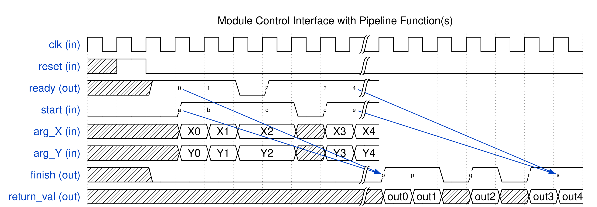

1. User Guide¶
1.1. Introduction to High-Level Synthesis¶
High-level synthesis (HLS) refers to the synthesis of a hardware circuit from a software program specified in a high-level language, where the hardware circuit performs the same functionality as the software program. For SmartHLS, the input is a C/C++-language program, and the output is a circuit specification in the Verilog hardware description language. The SmartHLS-generated Verilog can be given to Libero to be programmed on a Microchip FPGA. The underlying motivation for HLS is to raise the level of abstraction for hardware design, by allowing software methodologies to be used to design hardware. This can help to shorten design cycles, improve design productivity and reduce time-to-market.
While a detailed knowledge of HLS is not required to use SmartHLS, it is worthwhile to highlight the key steps involved in converting software to hardware. The four main steps involved in HLS are allocation, scheduling, binding, and RTL generation, which runs one after another (i.e., binding runs after scheduling is done).
Allocation: The allocation step defines the constraints on the generated hardware, including the number of hardware resources of a given type that may be used (e.g. how many divider units may be used, the number of RAM ports, etc.), as well as the target clock period for the hardware, and other user-supplied constraints.
Scheduling: Software programs are written without any notion of a clock or finite state machine (FSM). The scheduling step of HLS bridges this gap, by assigning the computations in the software to occur in specific clock cycles in hardware. With the user-provided target clock period constraint (e.g. 10 ns), scheduling will assign operations into clock cycles such that the operations in each cycle does not exceed the target clock period, in order to meet the user constraint. In addition, the scheduling step will ensure that the data-dependencies between the operations are met.
Binding: While a software program may contain an arbitrary number of operations of a given type (e.g. multiplications), the hardware may contain only a limited number of units capable of performing such a computation. The binding step of HLS is to associate (bind) each computation in the software with a specific unit in the hardware.
RTL generation: Using the analysis from the previous steps, the final step of HLS is to generate a description of the circuit in a hardware description language (Verilog).
Executing computations in hardware brings speed and energy advantages over performing the same computations in software running on a processor. The underlying reason for this is that the hardware is dedicated to the computational work being performed, whereas a processor is generic and has the inherent overheads of fetching/decoding instructions, loading/storing from/to memory, etc. Further acceleration is possible by exploiting hardware parallelism, where computations can concurrently. With SmartHLS, one can exploit four styles of hardware parallelism, which are instruction-level, loop-level, thread-level, and function-level parallelism.
1.1.1. Instruction-level Parallelism¶
Instruction-level parallelism refers to the ability to concurrently execute computations for instructions concurrently by analyzing data dependencies. Computations that do not depend on each other can be executed at the same time. Consider the following code snippet which performs three addition operations.
z = a + b;
x = c + d;
q = z + x;
...
Observe that the first and second additions do not depend on one another. These additions can therefore be executed concurrently, as long as there are two adder units available in the hardware. SmartHLS automatically analyzes the dependencies between computations in the software to exploit instruction-level parallelism in the generated hardware. The user does not need to do anything. In the above example, the third addition operation depends on the results of the first two, and hence, its execution cannot be done in parallel with the others. Instruction-level parallelism is referred to as fine-grained parallelism, as concurrency is achieved at a fine-grained level (instruction-level) of granularity.
1.1.2. Loop-level Parallelism¶
In software, the majority of runtime can be spent on loops, where loop iterations execute sequentially. That is, loop iteration i needs to finish before iteration i + 1 can start. With SmartHLS, it is possible to overlap the execution of a loop iteration with another iterations using a technique called loop pipelining (see Loop Pipelining). Now, imagine a loop with N iterations, where each iteration takes 100 clock cycles to complete. In software, this loop would take 100N clock cycles to execute. With loop pipelining in hardware, the idea is to execute a portion of a loop iteration i and then commence executing iteration i + 1 even before iteration i is complete. If loop pipelining can commence a new loop iteration every clock cycles, then the total number of clock cycles required to execute the entire loop be N + (N-1) cycles – a significant reduction relative to 100N. The (N-1) cycles is because each successive loop iteration start 1 cycle after the previous iteration, hence the last loop starts after (N-1) cycles.
A user can specify a loop to be pipelined with the use of the loop pipeline pragma. By default, a loop is not pipelined automatically.
1.1.3. Thread-level Parallelism¶
Modern CPUs have multiple cores that can be used to concurrently execute multiple threads in software. Threads are widely used in C/C++, where, parallelism is realized at the granularity of entire C/C++ functions. Hence thread-level parallelism is referred to as coarse-grained parallelism since one or more functions execute in parallel. SmartHLS supports hardware synthesis of hls::threads, where concurrently executing threads in software are synthesized into concurrently executing hardware units (see Multi-threading with SmartHLS Threads). This allows a software developer to take advantage of spatial parallelism in hardware using a familiar parallel programming paradigm in software. Moreover, the parallel execution behaviour of threads can be debugged in software, it is considerably easier than debugging in hardware.
In a multi-threaded software program, synchronization between the threads can be important, with the most commonly used synchronization constructs being mutexes and barriers. SmartHLS supports the synthesis of mutexes and barriers into hardware.
1.1.4. Data Flow (Streaming) Parallelism¶
The second style of coarse-grained parallelism is referred to as data flow parallelism. This form of parallelism arises frequently in streaming applications, and are commonly used for video/audio processing, machine learning, and computational finance. In such applications, there is a stream of input data that is fed into the application at regular intervals. For example, in an audio processing application, a digital audio sample may be given to the circuit every clock cycle. In streaming applications, a succession of computational tasks is executed on the stream of input data, producing a stream of output data. For example, the first task may be to filter the input audio to remove high-frequency components. Subsequently, a second task may receive the filtered audio, and boost the bass low-frequency components. Observe that, in such a scenario, the two tasks may be overlapped with one another. Input samples are continuously received by the first task and given to the second task.
SmartHLS provides a way for a developer to specify data flow parallelism through the use of function pipelining (see Function Pipelining) and/or threads (see Data Flow Parallelism with SmartHLS Threads) with SmartHLS’s FIFO library (see Streaming Library) used to connect the streaming modules.
1.2. SmartHLS Overview¶
SmartHLS accepts a C/C++ software program as input and automatically generates hardware described in Verilog HDL (hardware description language) that can be programmed onto a Microchip FPGA. The generated hardware can be imported as an HDL+ component into SmartDesign with a Tcl script that is also generated by SmartHLS.
In a software program, user first needs to specify a top-level function (during project creation in the SmartHLS IDE or in the source code with our pragma, #pragma HLS function top <function_name> ). Please refer to the Specifying the Top-level Function section for more details specifying the top-level function.
Then the following button, Compile Software to Hardware can be clicked to compile software to hardware:
{kind=link}
This will compile the top-level function and all of its descendant functions into hardware. The rest of the program (outside the top-level function) is considered as the software testbench, to give inputs into the top-level function and verify outputs from the top-level function (and its descendants). The software testbench is used to automatically generate the RTL testbench and stimulus for SW/HW Co-Simulation.
1.3. SmartHLS Pragmas¶
Pragmas can be applied to the software code by the user to apply HLS optimization techniques and/or guide the compiler for hardware generation. They are applied directly on the applicable software construct (i.e., function, loop, argument, array) to specify a certain optimization for them. For example, to apply pipelining on a loop:
#pragma HLS loop pipeline
for (i = 1; i < N; i++) {
a[i] = a[i-1] + 2
}
For more details on the supported pragmas, please refer to SmartHLS Pragmas Manual. For more details on loop pipelining, please refer to Loop Pipelining.
1.4. SmartHLS Constraints¶
SmartHLS also supports user constraints to guide hardware generation.
Whereas pragmas are applied directly on the source code for optimizations that are specific and local to the software construct that it is being applied on (function, loop, memory, argument, etc),
constraints are used for settings that will be globally applied to the entire program (i.e., setting the target FPGA, target clock period).
Each project specifies its constraints in the config.tcl file in the project directory.
This file is automatically generated by the SmartHLS IDE. To modify the constraints, click the HLS Constraints button:
The following window will open:

You can add, edit, or remove constraints from this window. Select a constraint type from the first drop-down menu. If you want more information about a constraint, click the Help button, which will open the corresponding Constraints Manual page.
An important constraint is the target clock period (shown as Set target clock period in the drop-down menu).
With this constraint, SmartHLS schedules the operations of a program to meet the specified clock period.
When this constraint is not given, SmartHLS uses the default clock period for each device, as shown below.
FPGA Vendor |
Device |
Default Clock Frequency (MHz) |
Default Clock Period (ns) |
|---|---|---|---|
Microsemi |
PolarFire |
100 |
10 |
Microsemi |
SmartFusion2 |
100 |
10 |
Details of all SmartHLS constraints are given in the Constraints Manual.
1.5. Specifying the Top-level Function¶
When compiling software to hardware with SmartHLS, you must specify the top-level function for your program.
Then SmartHLS will compile the specified top-level function and all of its descendant functions to hardware.
The remainder of the program (i.e., parent functions of the top-level function, typically the main function)
becomes a software testbench that is used for SW/HW Co-Simulation.
If there are multiple functions to be compiled to hardware, you should create a wrapper function that calls all of the
desired functions.
There are two ways to specify the top-level function.
The first way is to specify it during project creation in the SmartHLS IDE, as shown below.
{kind=link}
This will save the top-level function constraint into the config.tcl. After creating the project, if you open up the HLS Constraints window, the top-level function should show there.
{kind=link}
You can edit or remove the function from this window.
Alternatively, the top-level function can also be specified with the pragma, #pragma HLS function top, directly on the source code, below the function prototype, as shown below:
void top(int a, int b) {
#pragma HLS function top
...
...
}
Note
Please note that you cannot specify the top-level function using both the pragma and in project creation/HLS Constraints window. If you have specified the top-level function during project creation, you should not specify it again with the pragma. If you want to use the pragma, you should leave the Top-Level Function box empty during project creation or remove the specified top-level function in the HLS Constraints window.
1.6. SW/HW Co-Simulation¶
The circuit generated by SmartHLS should be functionally equivalent to the input software. Users should not modify the generated Verilog, as it is overwritten every time SmartHLS runs.
SW/HW co-simulation can be used to verify that the generated hardware produces the same outputs for the same inputs as software. With SW/HW co-simulation, user does not have to write their own RTL testbench, as it is automatically generated. If user already has their own custom RTL testbench, one can optionally choose their custom RTL testbench (Specifying a Custom Test Bench) and not use SW/HW co-simulation.
To use SW/HW co-simulation, the input software program will be composed of two parts,
A top-level function (and its descendant functions) to be synthesized to hardware by SmartHLS,
A C/C++ testbench (the parent functions of the top-level function, typically
main()) that invokes the top-level function with test inputs and verifies outputs.
SW/HW co-simulation consists of the following automated steps:
SmartHLS runs your software program and saves all the inputs passed to the top-level function.
SmartHLS automatically creates an RTL testbench that reads in the inputs from step 1 and passes them into the SmartHLS-generated hardware module.
ModelSim simulates the testbench and saves the SmartHLS-generated module outputs.
SmartHLS runs your software program again, but uses the simulation outputs as the output of your top-level function.
You should write your C/C++ testbench such that the main() function returns a 0 when all outputs from the top-level function are as expected and otherwise return a non-zero value. We use this return value to determine whether the SW/HW co-simulation has passed.
In step 1, we verify that the program returns 0.
In step 4, we run the program using the outputs from simulation and if the SmartHLS-generated circuit matches the C program then main() should still return 0.
If the C/C++ program matches the RTL simulation then you should see: SW/HW co-simulation: PASS
For any values that are shared between software testbench and hardware functions (top-level and descendants), you can either pass in as arguments into the top-level function, or if it is a global variable, it can be directly accessed without being passed in as an argument.
Any variables that are accessed by both software testbench and hardware functions will create an interface at the top-level module.
For example, if there is an array that is initialized in the software testbench and is used as an input to the hardware function, you may pass the array as an argument into the top-level function, which will create a memory interface for the array in the hardware core generated by SmartHLS.
Arguments into the top-level function can be constants, pointers, arrays, and FIFO data types.
The top-level function can also have a return value.
Please refer to the included example in the SmartHLS IDE, C++ Canny Edge Detection (SW/HW Co-Simulation), as a reference.
If a top-level argument is coming from a dynamically allocated array (e.g., malloc), the size of the array (in bytes) must be specified with our interface pragma (e.g., #pragma HLS interface argument(<arg_name>) depth(<int>)).
Please see the Configure Argument as Memory Interface for more details. The sizes of arrays that are statically allocated do not need to be specified with the pragma, as SmartHLS will automatically determine them.
For debugging purposes, SmartHLS converts any C printf
statements into Verilog $write statements so that values printed during
software execution will also be printed during hardware simulation. This
allows easy verification of the correctness of the hardware circuit. Verilog
$write statements are unsynthesizable and will not affect the final FPGA
hardware.
To specify the arguements to be passed to the software testbench (i.e., int main(int argc, char *argv[])), a Makefile argument MAIN_INPUT_ARGS can be defined in a makefile.user file (you need to create the file in the SmartHLS project folder).
For example, if a software testbench takes in two arguments, an input BMP file and a golden output BMP file, you would specify the following in the makefile.user file,
MAIN_INPUT_ARGS = input_file.bmp golden_output_file.bmp
Note
Limitations:
When function pipelining is used, the top-level function cannot have array interfaces (array arguments or global arrays that are accessed from both SW testbench and HW functions).
When multi-threading is used (Multi-threading with SmartHLS Threads), Co-Simulation can only support the case when all threads are joined in the functions where the threads are forked. Free-running threads (that are continuously running and never joined) are not supported by SW/HW Co-Simulation.
1.7. Loop Pipelining¶
Loop pipelining is an optimization that can automatically extract loop-level parallelism to create an efficient hardware pipeline. It allows executing multiple loop iterations concurrently on the same pipelined hardware.
To use loop pipelining, the user needs to specify the loop pipeline pragma above the applicable loop:
#pragma HLS loop pipeline
for (i = 1; i < N; i++) {
a[i] = a[i-1] + 2
}
An important concept in loop pipelining is the initiation interval (II), which is the cycle interval between starting successive iterations of the loop. The best performance and hardware utilization is achieved when II=1, which means that successive iterations of the loop can begin every clock cycle. A pipelined loop with an II=2 means that successive iterations of the loop can begin every two clock cycles, corresponding to half of the throughput of an II=1 loop.
By default, SmartHLS always attempts to create a pipeline with an II=1. However, this is not possible in some cases due to resource constraints or cross-iteration dependencies. Please refer to Optimization Guide on more examples and details on loop pipelining. When II=1 cannot be met, SmartHLS’s pipeline scheduling algorithm will try to find the smallest possible II that satisfies the constraints and dependencies.
1.8. Multi-threading with SmartHLS Threads¶
In an FPGA hardware system, the same module can be instantiated multiple times to exploit spatial parallelism, where all module instances execute in parallel to achieve higher throughput.
SmartHLS allows easily inferring such parallelism with the use of SmartHLS Threads which is a simplified API of std::thread commonly used in software.
Parallelism described in software with SmartHLS threads is automatically compiled to parallel hardware with SmartHLS.
Each thread in software becomes an independent module that concurrently executes in hardware.
For example, the code snippet below creates N threads running the Foo function in software.
SmartHLS will correspondingly create N hardware instances all implementing the Foo function, and parallelize their executions.
SmartHLS also supports mutex and barrier APIs so that synchronization between threads can be specified using locks and barriers.
void Foo (int* arg);
for (i = 0; i < N; i++) {
thread[i] = hls::thread<void>(Foo, &args[i]);
}
SmartHLS supports hls::thread APIs, which are listed below in
Supported SmartHLS Thread APIs.
Note that for a hls::thread kernel, SmartHLS will automatically inline any of its descendant functions.
The inlining cannot be overridden with the noinline pragma (see SmartHLS Pragmas Manual).
1.9. Supported SmartHLS Thread APIs¶
You can use SmartHLS thread library by including the header file:
#include "hls/thread.hpp"
The thread library is provided as a C++ template class.
The template argument of hls::thread<T> object specifies the return type T of the threaded function.
For example, hls::thread<int> is a thread that can invoke a function with int return type,
and hls::thread<void> is a thread that can invoke a function that returns void.
To start the parallel execution of a function, we will pass the function and function call arguments to the constructor of a new thread instance,
// f1 is a function that we would like to execute concurrently.
void f1(int a);
// Create a new thread 't1' with the function 'f1' and argument 'm'.
// - <void> corresponds to the return type of 'f1'.
// - Argument 'm' corresponds to the parameter 'a' of 'f1'.
// - In software, this line creates a parallel thread to run the f1 function.
// - In hardware, this line means a dedicated hardware module for f1 should
// be created for this specific thread call, and the dedicated hardware
// module will start the execution right here.
hls::thread<void> t1(f1, m);
// Another way to create a parallel thread:
int f2(); // f2 has no argument and the return type is <int>.
hls::thread<int> t2; // Create a thread 't2' instance first.
t2 = hls::thread<int>(f2); // Assign 't2' later with the function and arguments.
The code below shows how to join a thread (i.e., wait for the thread completion), and optionally retrieve a non-void return value. Note that joining a thread will block the execution until the threaded function finishes.
hls::thread<void> t1(f1, m);
t1.join(); // The program will block here until thread 't1' finishes running 'f1'.
hls::thread<int> t2 = hls::thread<int>(f2);
int ret = t2.join(); // The program will wait for t2 to finish and retrieve the return value.
If you have used std::thread, you may know passing an argument by reference requires a std::ref wrapper around the argument.
Similarly, hls::ref is used to wrap the passed-in by reference argument when the hls::thread is created:
int f(int &a);
int x;
hls::thread<int> t = hls::thread<int>(f, hls::ref(x));
Note
SmartHLS threads differs from std::thread in a few aspects:
SmartHLS threads support retrieving the return value from the threaded function (this functionality is only supported using
std::futurein the standard threading library).SmartHLS threads use templates to specify the return type of the threaded function.
SmartHLS threads are auto-detaching, which means if the function where the thread is created is exited without using
join, the thread will be detached when destructed. But the threaded function can continue executing.
SmartHLS thread library also supports mutex and barrier as synchronization primitives.
mutex can be used to protect shared data from being simultaneously accessed by multiple threads.
hls::mutex has lock() and unlock() methods. The example below shows how to create and use hls::mutex:
hls::mutex m;
void f() {
m.lock();
....
m.unlock();
}
barrier provides a thread-coordination mechanism that allows at most an expected number of threads to block until the expected number of threads arrive at the barrier.
hls::barrier has init() and wait() methods. The following example illustrates the use of hls::barrier:
hls::barrier bar;
void f1() {
....
bar.wait();
}
void f2() {
....
bar.wait();
}
int main() {
bar.init(2);
auto t1 = hls::thread<void>(f1);
auto t2 = hls::thread<void>(f2);
....
}
1.10. Data Flow Parallelism with SmartHLS Threads¶
Data flow parallelism is another commonly used technique to improve hardware throughput, where a succession of computational tasks that process
continuous streams of data can execute in parallel.
The concurrent execution of computational tasks can also be accurately described in software using hls::thread APIs.
In addition, the continuous streams of data flowing through the tasks can be inferred using SmartHLS’s built-in FIFO data structure (see Streaming Library).
Let’s take a look at the code snippet below, which is from the example project, “Fir Filter (Loop Pipelining with hls::thread)”, included in the SmartHLS IDE.
In the example, the main function contains the following code snippet:
// Create input and output FIFOs
hls::FIFO<int> input_fifo(/*depth*/ 2);
hls::FIFO<int> output_fifo(/*depth*/ 2);
// Launch thread kernels.
hls::thread<void> thread_var_fir(FIRFilterStreaming, &input_fifo, &output_fifo);
hls::thread<void> thread_var_injector(test_input_injector, &input_fifo);
hls::thread<void> thread_var_checker(test_output_checker, &output_fifo);
// Join threads.
thread_var_injector.join()
thread_var_checker.join();
The corresponding hardware is illustrated in the figure below.

The two hls::FIFO<int>s in the C++ code corresponds to the creation of the two FIFOs, where the bit-width is set according to the type shown in the constructor argument <int>.
The three hls::thread<void> calls initiate and parallelize the executions of three computational tasks, where each task is passed in a FIFO (or a pointer to a struct containing more than one FIFO pointers) as its argument.
The FIFO connections and data flow directions are implied by the uses of FIFO read() and write() APIs.
For example, the test_input_injector function has a write() call writing data into the input_fifo, and the FIRFilterStreaming function uses a read() call to read data out from the input_fifo.
This means that the data flows through the input_fifo from test_input_injector to FIRFilterStreaming.
The join() API is called to wait for the completion of test_input_injector and test_output_checker.
We do not “join” the FIRFilterStreaming thread since it contains an
infinite loop (see code below) that is always active and processes incoming
data from input_fifo whenever the FIFO is not empty.
This closely matches the always running behaviour of streaming hardware, where hardware is constantly running and processing data..
Now let’s take a look at the implementation of the main computational task (i.e., the FIRFilterStreaming threading function).
void FIRFilterStreaming(hls::FIFO<int> *input_fifo,
hls::FIFO<int> *output_fifo) {
// This loop is pipelined and will be "always running", just like how a
// streaming module always runs when new input is available.
#pragma HLS loop pipeline
while (1) {
// Read from input FIFO.
int in = input_fifo->read();
printf("FIRFilterStreaming input: %d - %d\n", i, in);
static int previous[TAPS] = {0}; // Need to store the last TAPS -1 samples.
const int coefficients[TAPS] = {0, 1, 2, 3, 4, 5, 6, 7,
8, 9, 10, 11, 12, 13, 14, 15};
int j = 0, temp = 0;
for (j = (TAPS - 1); j >= 1; j -= 1)
previous[j] = previous[j - 1];
previous[0] = in;
for (j = 0; j < TAPS; j++)
temp += previous[TAPS - j - 1] * coefficients[j];
int output = (previous[TAPS - 1] == 0) ? 0 : temp;
// Write to output FIFO.
output_fifo->write(output);
}
}
In the code shown in the example project, you will notice that all three threading functions contain a loop, which repeatedly reads and/or writes data from/to FIFOs to perform processing. In SmartHLS, this is how one can specify that functions are continuously processing data streams that are flowing through FIFOs.
1.10.1. Further Throughput Enhancement with Loop Pipelining¶
In this example, the throughput of the streaming circuit will be limited by how frequently the functions can start processing new data (i.e., how frequently the new loop iterations can be started).
For instance, if the slowest function among the three functions can only start a new loop iteration every 4 cycles, then the throughput of the entire streaming circuit will be limited to processing one piece of data every 4 cycles.
Therefore, as you may have guessed, we can further improve the circuit throughput by pipelining the loops in the three functions.
If you run SmartHLS synthesis for the example (Compile Software to Hardware), you should see in the Pipeline Result section of our report file, summary.hls.rpt, that all loops can be pipelined with an initiation interval of 1.
That means all functions can start a new iteration every clock cycle, and hence the entire streaming circuit can process one piece of data every clock cycle.
Now run the simulation (Simulate Hardware) to confirm our expected throughput. The reported cycle latency should be just slightly more than the number of data samples to be processed
(INPUTSIZE is set to 128; the extra cycles are spent on activating the parallel accelerators, flushing out the pipelines, and verifying the results).
1.11. Function Pipelining¶
You have just seen how an efficient streaming circuit can be described in software by using loop pipelining with SmartHLS threads.
An alternative way to describe such a streaming circuit is to use Function Pipelining.
When a function is marked to be pipelined (by using the Pipeline Function constraint), SmartHLS will implement the function as a pipelined circuit that can start a new invocation every II cycles.
That is, the circuit can execute again while its previous invocation is still executing, allowing it to continuously process incoming data in a pipelined fashion.
This essentially has the same circuit behaviour as what was described in the previous example (loop pipelining with threads) in the Data Flow Parallelism with SmartHLS Threads section, without having to write the software code using threads.
This feature also allows multiple functions that are added to the Pipeline function constraint to execute in parallel, achieving the same hardware behaviour as the previous loop pipelining with threads example.
When using this feature, the user-specified top-level function (see Specifying the Top-level Function) can only call functions that are specified to be function pipelined (e.g., the top-level function cannot call one function pipeline and one non-function pipeline). The top-level function cannot have any control flow (i.e., loops, if/else statements), and cannot perform any operations other than declaring variables (i.e., memories, FIFOs) and calling function pipelines.
For SW/HW co-simulation, the top-level function that calls one or more function pipelines can only have interfaces that are created from FIFOs and constant values (top-level interfaces are created from top-level function arguments and global variables that are accessed from both software testbench functions and hardware kernel functions).
Please refer to the C++ Canny Edge Detection (SW/HW Co-Simulation) example included in the SmartHLS IDE for an example of using function pipelining.
In this example, you should see the top-level function, canny, as below.
void canny(hls::FIFO<unsigned char> &input_fifo,
hls::FIFO<unsigned char> &output_fifo) {
#pragma HLS function top
hls::FIFO<unsigned char> output_fifo_gf(/* depth = */ 2);
hls::FIFO<unsigned short> output_fifo_sf(/* depth = */ 2);
hls::FIFO<unsigned char> output_fifo_nm(/* depth = */ 2);
gaussian_filter(input_fifo, output_fifo_gf);
sobel_filter(output_fifo_gf, output_fifo_sf);
nonmaximum_suppression(output_fifo_sf, output_fifo_nm);
hysteresis_filter(output_fifo_nm, output_fifo);
}
As shown above, the top-level function has been specified with #pragma HLS function top. The top-level function calls four functions, gaussian_filter, sobel_filter, nonmaximum_suppression, and hysteresis_filter, each of which are specified to be function pipelined (with #pragma HLS function pipeline).
The top-level arguments are input_fifo and output_fifo. The input_fifo is given as an argument into the first function, gaussian_filter, and gives the inputs into the overall circuit.
The output_fifo is given as an argument into the last function, hysteresis_filter, and receives the outputs of the overall circuit.
There are also intermediate FIFOs, output_fifo_gf, output_fifo_sf, and output_fifo_nm, which are given as arguments into the function pipelines and thus connect them (i.e., outputs of gaussian_filter is given as inputs to sobel_filter).
When synthesizing a top-level function with multiple pipelined sub-functions, SmartHLS will automatically parallelize the execution of all sub-functions that are called in the top-level function, forming a streaming circuit with data flow parallelism.
In this case gaussian_filter executes as soon as there is data in the input_fifo, and sobel_filter starts running as soon as there is data in the output_fifo_sf.
In other words, a function pipeline does not wait for its previous function pipeline to completely finish running before it starts to execute, but rather, it starts running as early as possible.
Each function pipeline also starts working on the next data while the previous data is being processed (in a pipelined fashion).
If the initiation interval (II) is 1, a function pipeline starts processing new data every clock cycle.
Once the function pipelines reach steady-state, all function pipelines execute concurrently.
This example showcases the synthesis of a streaming circuit that consists of a succession of concurrently executing pipelined functions.
Note
In the generated Verilog for a function pipelined hardware, the start input port serves as an enable signal to the circuit.
The circuit stops running when the start signal is de-asserted. To have the circuit running continuously, the start input port should be kept high.
1.12. Memory Partitioning¶
Memory Partitioning is an optimization where aggregate types such as arrays and structs are partitioned into smaller pieces allowing for a greater number of reads and writes (accesses) per cycle. SmartHLS instantiates a RAM for each aggregate type where each RAM has up to two ports (allowing up to two reads/writes per cycle). Partitioning aggregate types into smaller memories or into its individual elements allows for more accesses per cycle and improves memory bandwidth.
There are two flavors of memory partitioning, access-based partitioning and user-specified partitioning.
1.12.1. Access-Based Memory Partitioning¶
Access-based partitioning is automatically applied to all memories except for those at the top-level interfaces (I/O Memory). This flavor of memory partitioning will analyze the ranges of all accesses to a memory and create partitions based on these accesses. After analyzing all memory accesses, independent partitions will be implemented in independent memories. If two partitions overlap in what they access, they will be merged into one partition. If there are any sections of the memory that is not accessed, it will be discarded to reduce memory usage. For example, if there are two loops, where one loop accesses the first half of an array and the second loop accesses the second half of the array, the accesses to the array from the two loops are completely independent. In this case the array will be partitioned into two and be implemented in two memories, one that holds the first half of the array and another that holds the second half of the array. However, if both loops access the entire array, their accesses overlap, hence the two partitions will be merged into one and the array will just be implemented in a single memory (without being partitioned). Access-based partitioning is done automatically without needing any memory partition pragmas, in order to automatically improve memory bandwidth and reduce memory usage whenever possible.
Example
Access-based partitioning is automatically applied to all memories by SmartHLS except for interface memories (top-level function arguments and global variables accessed by both software testbench and hardware functions) to the top-level function. Interface memories need to be partitioned with the memory partition pragma. See the code snippet below that illustrate an example of accessed-based partitioning.
int array[8];
int result = 0;
...
#pragma unroll
for (i = 0; i < 8; i++) {
result += array[i]
}
In the example above, each iteration of the loop access an element of array and adds it to result. The unroll pragma is applied to completely unroll the loop.
Without partitioning, SmartHLS will implement this array in a RAM (with eight elements), where an FPGA RAM can have up to two read/write ports.
In this case, the loop will take four cycles, as eight reads are needed from the RAM and up to two reads can be performed per cycle with a two ported memory.
With access-based partitioning, the accesses to the above array will be analyzed. With unrolling, there will be eight load instructions, each of which will access a single array element, with no overlaps in accesses between the load instructions (i.e., the accesses of each load instruction are independent). This creates 8 partitions, with one array element in each partition. After partitioning, all eight reads can occur in the same clock cycle, as each memory will only need one memory access. Hence the entire loop can finish in a single cycle. With this example, we can see that memory partitioning can help to improve memory bandwidth and improve performance.
With access-based partitioning, SmartHLS outputs messages to the console specifying which memory has been partitioned into how many partitions, as shown below:
Info: Partitioning memory: array into 8 partitions.
Limitations:
Accessing memory outside of an array dimension is not supported by memory partitioning and may cause incorrect circuit behavior. An example of this is lowering a 2-d array to a pointer and iterating through the size of the 2-d array.
Pointers that alias to different memories or different sections of the same memory (e.g. a pointer that is assigned to multiple memories based on a condition) are not supported in memory partitioning. The aliased memories will not be partitioned.
Please refer to the Optimization Guide for more examples and details.
1.12.2. User-Specified Memory Partitioning¶
User-specified partitioning can be achieved with the HLS memory partition pragma .
User-specified partitioning is where the user explicitly specifies a memory to be partitioned via the memory partition pragma (#pragma HLS memory partition variable, #pragma HLS memory partition argument). See _pragma_memory_partition_argument and Partition Memory for more details.
User-specified partitioning also analyzes accesses but partitions based on a predefined structure and array dimension.
There are two user-specified partitioning types supported by SmartHLS: Complete and Struct-fields.
1.12.2.1. Complete Partitioning¶
Complete partitioning partitions memories based on a user-specified dimension. Memories are then partitioned completely on the specified dimension, which means the memory is partitioned into individual elements of the specified array dimension. More information on the pragmas can be found in the pragma references linked above. Unaccessed sections of the original memory are also discarded.
Note
Accessing memory outside of an array dimension is not supported by memory partitioning and may cause incorrect circuit behavior. An example of this is casting a 2-d array to a pointer (1-d) and iterating through the entire array as 1-d.
Example
#pragma HLS memory partition variable(array)
int array[8];
int result = 0;
...
for (i = 0; i < 8; i++) {
result += array[i]
}
The example above shows the same example that was shown for access-based partitioning, however, the loop is not unrolled in this case. Access-based partitioning will try to partition the array but will only find one load instruction in the loop that accesses the entire array. This preventing access-based partitioning as all eight accesses come from the same load instruction.
User-specified partitioning can be used to force partitioning of this array with a predefined structure. In the example above, the memory partition pragma specifies the array to be partitioned completely into individual elements. After partitioning, the array will be partitioned into eight individual elements just like with the access-based partitioning example above. The benefit in this case is that the loop does not have to be unrolled, which can be useful in cases like when the loop is pipelined and cannot be unrolled (see Loop Pipelining).
// partitioned completely up to DIM1 from left to right
#pragma HLS memory partition variable(array3d) type(complete) dim(1)
int array3d[DIM2][DIM1][DIM0];
The memory partition pragma has optional arguments type and dim that specifies the partition type and dimension to be partitioned
up to, respectively. The default type is complete which means to partition the array into individual elements, and the default dimension
is 0 which means to partition up to the right-most dimension. The type can also specified to be none to prevent partitioning for a
specific memory. The dimension provided specifies the dimension to be partitioned up to, with the resulting partitions being elements of
that array dimension. For example, in the above code snippet array3d is specified to be partitioned up dimension 1, which means array
dimensions corresponding to DIM2 and DIM1 will be completely partitioned to produce DIM2``x``DIM1 partitions of int[DIM0].
Lower numbered dimensions correspond to right-ward dimensions of the array and higher numbered dimensions correspond to left-ward dimensions
of the array, as shown by the DIMX macros specifying the sizes of the dimensions of array3d.
With user-specified partitioning, SmartHLS outputs messages to the console stating the variable set to be partitioned and its settings. SmartHLS also outputs messages specifying if a memory has been partitioned and into how many partitions. If a memory is specified to be partitioned but cannot be partitioned, SmartHLS will output a warning.
Info: Found user-specified memory: "array" on line 6 of test.c, with partition type: Complete, partition dimension: 0.
Info: Found user-specified memory: "array3d" on line 27 of test.c, with partition type: Complete, partition dimension: 1.
Warning: The user-specified memory "array3d" on line 27 of test.c could not be partitioned because a loop variable indexing into a multi-dimenional array comes from a loop variable and goes out of the array dimension bounds. Going outside of array dimension bounds is not supported for memory partitioning.
Info: Partitioning memory: array into 8 partitions.
Limitations:
Accessing memory outside of an array dimension is not supported by memory partitioning and will sometimes cause incorrect circuit behavior. An example of this is lowering a 2-d array to a pointer and iterating through the size of the 2-d array.
Pointers that alias to different memories or different sections of the same memory (e.g. a pointer that is assigned to multiple memories based on a condition) are not supported in memory partitioning. The aliased memories will not be partitioned. The exception to this is that functions that get called with different pointers are handled properly for user-specified partitioning.
Please refer to the Optimization Guide for more examples and details.
1.12.2.2. Struct-Fields Partitioning¶
Struct-fields partitioning partitions a (array of) struct argument / variable into its individual fields such that each field is a partition. Unlike complete partitioning, if a field in the partitioned struct is an aggregate type (struct or array), the field is not further partitioned to its elements. Note that applying Struct-fields partitining to an array-of-struct creates an array for each field in the struct. Unaccessed paritions (fields) are discarded, but the Unaccessed elements in an aggreagte partition (field) are not be discarded.
Example
struct Ty {
struct SubTy { int a; int b; };
char x;
short y[2];
SubTy z;
};
int sum(Ty array[8]) {
#pragma HLS function top
#pragma HLS memory partition argument(array) type(struct_fields)
int result = 0;
for (int i = 0; i < 8; i++) {
result += array[i].x + array[i].y[0] + array[i].z.a;
}
return result;
}
The example above shows an array of struct array that is array of struct of type Ty that is partitioned using Struct-fields partitioning. With the user-specified partitioning, SmartHLS outputs messages to the console stating that the argument set to be partitioned and how many partitions are created.
Info: Found partition interface: array.
Info: Partitioning memory: array into 3 partitions.
The summary report from SmartHLS lists the 3 partitions created from the fields of the struct. Note that the array field Ty.y has one partition, and similarly the struct field Ty.z.
+---------------------------------------------------------------------------+
| I/O Memories |
+---------+-----------------------+------+-------------+------------+-------+
| Name | Accessing Function(s) | Type | Size [Bits] | Data Width | Depth |
+---------+-----------------------+------+-------------+------------+-------+
| array_x | sum | ROM | 0 | 8 | 0 |
| array_y | sum | ROM | 0 | 16 | 0 |
| array_z | sum | ROM | 0 | 64 | 0 |
+---------+-----------------------+------+-------------+------------+-------+
1.13. SmartHLS C/C++ Library¶
SmartHLS includes a number of C/C++ libraries that allow creation of efficient hardware.
1.13.1. Streaming Library¶
The streaming library includes the FIFO (first-in first-out) data structure along with its associated API functions. The library can be compiled in software to run on the host machine (e.g., x86). Each FIFO instance in software is implemented as a First Word Fall Through (FWFT) FIFO in hardware.
The FIFO library is provided as a C++ template class. The FIFO data type can be flexibly defined and specified as a template argument of the FIFO object. For example, the FIFO data type could be defined as a struct containing multiple integers:
struct AxisWord { ap_uint<64> data; ap_uint<8> keep; ap_uint<1> last; };
hls::FIFO<AxisWord> my_axi_stream_interface_fifo;
Note
A valid data type could be any of the 1) C/C++ primitive integer types, 2) SmartHLS’s C++ Arbitrary Precision Data Types Library (ap_int, ap_uint, ap_fixpt, ap_ufixpt), or 3) a struct containing primitive integer types or SmartHLS’s C++ arbitrary Precision Data Types. In the case of a struct type, it is prohibited to use ‘ready’ or ‘valid’ as the name of a struct field. This is because in the generated Verilog, a FIFO object will introduce an AXI-stream interface associated with valid/ready handshaking signals and the names will overlap.
You can use the C++ streaming library by including the header file:
#include "hls/streaming.hpp"
Note
Users should always use the APIs below to create and access FIFOs. Any other uses of FIFOs are not supported in SmartHLS.
An example code for using the streaming library is shown below.
// declare a 32-bit wide fifo
hls::FIFO<unsigned> my_fifo;
// set the fifo's depth to 10
my_fifo.setDepth(10);
// write to the fifo
my_fifo.write(data);
// read from the fifo
MyStructT data = my_fifo.read();
// check if fifo is empty
bool is_empty = my_fifo.empty();
// check if the fifo is full
bool is_full = my_fifo.full();
// declare a 32-bit wide fifo with a depth of 10
hls::FIFO<unsigned> my_fifo_depth_10(10);
As shown above, there are two ways of creating a FIFO (hls::FIFO<unsigned> my_fifo and hls::FIFO<unsigned> my_fifo_depth_10(10)).
The width of the FIFO is determined based on the templated data type of the FIFO.
For example, FIFO<unsigned> my_fifo creates a FIFO that is 32 bits wide.
The FIFO’s data type can be any primitive type or arbitrary bitwidth types (ap_int/ap_uint/ap_fixpt/ap_ufixpt),
or a struct of primitive/arbitrary bitwidth types (or nested structs of those types) but
cannot be a pointer or an array (or a struct with a pointer/array).
An array or a struct of FIFOs is supported.
The depth of the FIFO can be provided by the user as a constructor argument
when the FIFO is declared, or it can also be set afterwards with the setDepth(unsigned depth) function.
If the depth is not provided by the user, SmartHLS uses a default FIFO depth of 2.
The depth of a FIFO can also be set to 0, in which case SmartHLS will create direct ready/valid/data wire connections (without a FIFO) between the source and the sink.
1.13.1.1. Streaming Library - Blocking Behaviour¶
Note that the fifo read() and write() calls are blocking.
Hence if a module attempts to read from a FIFO that is empty, it will be stalled.
Similarly, if it attempts to write to a FIFO that is full, it will be stalled.
If you want non-blocking behaviour, you can check if the FIFO is
empty (with empty()) before calling read(), and likewise, check
if the FIFO is full (with full()) before calling write() (see Streaming Library - Non-Blocking Behaviour).
With the blocking behaviour, if the depths of FIFOs are not sized properly, it can cause a deadlock. SmartHLS prints out messages to alert the user that a FIFO is causing stalls.
In hardware simulation, the following messages are shown.
Warning: fifo_write() has been stalled for 1000000 cycles due to FIFO being full.
Warning: fifo_read() has been stalled for 1000000 cycles due to FIFO being empty.
Warning: fifo_read() has been stalled for 1000000 cycles due to FIFO being empty.
Warning: fifo_write() has been stalled for 1000000 cycles due to FIFO being full.
Warning: fifo_read() has been stalled for 1000000 cycles due to FIFO being empty.
Warning: fifo_read() has been stalled for 1000000 cycles due to FIFO being empty.
If you continue to see these messages, you can suspect that there may be a deadlock. In this case, we recommend making sure there is no blocking read from an empty FIFO or blocking write to a full FIFO, and potentially increasing the depth of the FIFOs.
Note
We recommend the minimum depth of a FIFO to be 2, as a depth of 1 FIFO can cause excessive stalls.
1.13.1.2. Streaming Library - Non-Blocking Behaviour¶
As mentioned above, non-blocking FIFO behaviour can be created with the use of empty() and full() functions.
Non-blocking FIFO read and write can be achieved as shown below.
if (!fifo_a.empty())
unsigned data_in = fifo_a.read();
if (!fifo_b.full())
fifo_b.write(data_out);
Note
A deadlock may occur if a fifo with a depth of 0 uses non-blocking write on its source and non-block read on its sink.
1.13.2. C++ Arbitrary Precision Data Types Library¶
The C++ Arbitrary Precision Data Types Library provides numeric types ap_[u]int and ap_[u]fixpt, which can be used to specify data types of arbitrary bitwidths in software (e.g., ap_int<9> for a 9-bit integer variable).
These data types will be efficiently translated to create hardware with the exact widths. The data types also come with bit manipulation utilities, such as bit range selection and concatenation.
1.13.3. C++ Arbitrary Precision Integer Library¶
The C++ ap_[u]int type allows specifying signed and unsigned data types of any bitwidth.
They can be used for arithmetic, concatenation, and bit level operations. You can use the ap_[u]int type
by including the following header file.
#include "hls/ap_int.hpp"
The desired width of the ap_[u]int can be specified as a template parameter, ap_[u]int<W>,
allowing for wider types than the existing C arbitrary bit-width library.
An example using the C++ library is shown below.
#include "hls/ap_int.hpp"
#include <iostream>
using namespace hls;
int main() {
ap_uint<128> data("0123456789ABCDEF0123456789ABCDEF");
ap_int<4> res(0);
for (ap_uint<8> i = 0; i < data.length(); i += 4) {
// If this four bit range of data is <= 7
if (data(i + 3, i) <= 7) {
res -= 1;
} else {
res += 1;
}
}
// iostream doesn't synthesize to hardware, so only include this
// line in software compilation. Any block surrounded by this ifdef
// will be ignored when compiling to hardware.
#ifdef SMARTHLS_SW
std::cout << res << std::endl;
#endif
}
In the above code we iterate through a 128 bit unsigned integer in four bit segments, and track the difference between how many segments are above and below 7. All variables have been reduced to their specified minimum widths.
1.13.3.1. Printing Arbitrary Precision integers¶
The C++ Arbitrary Precision Integer Library provides some utilities for printing ap_[u]int types. The to_string(base, signedness) function
takes an optional base argument (one of 2, 10, and 16) which defaults to 16, as well as an optional signedness argument which determines if the data
should be printed as signed or unsigned, which defaults to false. The output stream operator << is also overloaded to put arbitrary precision integer
types in the output stream as if they were called with the default to_string arguments.
Some example code using these utilities is shown below.
#include "hls/ap_int.hpp"
#include <stdio.h>
#include <iostream>
using namespace hls;
using namespace std;
...
ap_uint<8> ap_u = 21;
ap_int<8> ap = -22;
// prints: 0x15
cout << "0x" << ap_u << endl;
// prints: -22
cout << ap.to_string(10, true) << endl;
// prints: 234
cout << ap.to_string(10) << endl;
// prints 00010101
printf("%s\n", ap_u.to_string(2).c_str());
1.13.3.2. Initializing Arbitrary Precision integers¶
The ap_[u]int types can be constructed and assigned to from other arbitrary precision integers, C++ integral
types, ap_[u]fixpt types, as well as concatenations and bit selections. They can also be initialized from a hexadecimal
string describing the exact bits.
Some examples of initializing arbitrary precision integer types are show below.
#include "hls/ap_int.hpp"
#include "hls/ap_fixpt.hpp"
using namespace hls;
...
// Initialized to -7
ap_int<4> int1 = -7;
// Initialized to 15
// The bits below the decimal are truncated.
ap_uint<4> int2 = ap_ufixpt<5, 4, AP_RND, AP_SAT>(15.5);
// Initialized to 132
// Could also write "0x84"
// The 0x is optional
ap_uint<8> int3("84");
// Initialized to 4
// Bit selections are zero extended to match widths
ap_int<4> int4 = int3(2, 0);
// Initialized to 128
// ap_uint types are zero extended to match widths
// ap_int types are sign extended to match widths
ap_int<16> int5 = ap_uint<8>("80");
// Initialized to 2
// The value 4098 (= 4096 + 2) is wrapped to 2
ap_uint<12> int6 = 4098;
1.13.3.3. C++ Arbitrary Precision Integer Arithmetic¶
The C++ Arbitrary Precision Integer library supports all standard arithmetic, logical bitwise, shifts, and comparison operations. Note that for shifting that >> and << are logical, and the .ashr(x) function implements arithmetic right shift. The output types of an operation are wider than their operands as necessary to hold the result. Operands of ap_int, and ap_uint type, as well as operands of different widths can be mixed freely. By default ap_int will be sign extended to the appropriate width for an operation, while ap_uint will be zero extended. When mixing ap_int and ap_uint in an arithmetic operation the resulting type will always be ap_int. Some of this behaviour is demonstrated in the example below.
#include "hls/ap_int.hpp"
using namespace hls;
...
ap_int<8> a = 7;
ap_int<12> b = 100;
ap_uint<7> c = 3;
// Multiply expands to the sum of a and b's width
ap_int<20> d = a * b;
// Add result in max of widths + 1
ap_int<13> e = a + b;
// Logical bitwise ops result in max of widths
ap_int<12> f = a & b;
// Mixing ap_int and ap_uint results in ap_int
ap_int<9> g = a + c;
// ap_(u)int types can be mixed freely with integral types
ap_int<33> h = -1 - a;
1.13.3.4. C++ Arbitrary Precision Integer Explicit Conversions¶
The ap_[u]int types support several explicit conversion functions which allow the value to be interpreted in different ways.
The to_uint64() function will return a 64 bit unsigned long long with the same bits as the original ap_[u]int, zero extending
and wrapping as necessary. Assigning an ap_[u]int wider than 64 bits to an unsigned long long would also wrap to match widths,
without needing to call to_uint64(). The to_int64() function will return a 64 bit signed long long and will sign extend as necessary.
An arbitrary precision integer data type can be casted to an arbitrary precision fixed-point data type with the to_fixpt<I_W>() and to_ufixpt<I_W>() functions (returns ap_fixpt<W, I_W> and ap_ufixpt<W, I_W> types respectively), with the same bits as the original ap_[u]int<W>.
For more on the ap_[u]fixpt template, please refer to the C++ Arbitrary Precision Fixed Point Library section.
An example demonstrating these functions is shown below.
#include "hls/ap_int.hpp"
#include "hls/ap_fixpt.hpp"
using namespace hls;
...
// zero extend 16 bit -32768 to 64 bit 32768
unsigned long long A = ap_int<16>(-32768).to_uint64();
// wrap from 65 bit 2**64 + 1 to 64 bit 1
unsigned long long B = ap_uint<65>("10000000000000001").to_uint64();
// interpret 8 bit uint as 8 bit ufixpt with four bits above decimal
// by value 248 becomes 15.5 (== 248 / 2**4)
ap_ufixpt<8, 4> C = ap_uint<8>(248).to_ufixpt<4>();
// interpret 4 bit int as 4 bit fixpt with leading bit 8 bits above decimal
// by value -8 becomes -128 (== -8 * 2**4)
ap_fixpt<4, 8> D = ap_int<4>(-8).to_fixpt<8>();
// interpret 6 bit int as 6 bit ufixpt with 6 bits above decimal
// by value 8 becomes 8
ap_ufixpt<6, 6> E = ap_int<6>(8).to_ufixpt<6>();
1.13.4. C++ Arbitrary Precision Bit-level Operations¶
The C++ Arbitrary Precision Library provides utilities to select, and update ranges of arbitrary precision data, as well as perform concatenation.
Bit selection and updating is defined for all C++ arbitrary precision numeric types. Concatenation is defined on all C++ Arbitrary Precision Library constructs including arbitrary precision numeric types, as well as bit selections, and other concatenations.
1.13.4.1. Selecting and Assigning to a Range of Bits¶
#include "hls/ap_int.hpp"
using namespace hls;
...
ap_uint<8> A(0xBC);
ap_int<4> B = A(7, 4); // B initialized as 0xB; "A(7, 4)" is equivalent to "A.range(7, 4)"
ap_int<4> C = A[2]; // C initialized as 0x1
// A[2] is zero extended to match widths
A(3, 0) = 0xA; // A becomes 0xBA; "A(3, 0) is equivalent to "A.range(3, 0)"
On C++ arbitrary precision types num(a, b) (or num.range(a, b)) will select and create a reference to the underlying arbitrary precision value.
The operator num[a] selects and creates a reference to a single bit.
This reference can be assigned to, and used to access the underlying data.
1.13.4.2. Bit Concatenation¶
#include "hls/ap_int.hpp"
using namespace hls;
...
ap_uint<4> A(0xA);
ap_uint<8> B(0xCB);
ap_uint<8> AB( (A, B(3,0)) ); // AB initialized as 0xAB
ap_uint<12> ABC( (A, ap_uint<4>(0xB), B(7,4)) ); // ABC initialized as 0xABC
Putting any C++ arbitrary precision types in a comma separated list will generate a concatenation. The concatenation can currently be used to create arbitrary precision types (zero extending or truncating to match widths), but can not be assigned to.
1.13.5. C++ Arbitrary Precision Fixed Point Library¶
The C++ Arbitrary Precision Fixed Point library provides fast bit accurate software simulation, and efficient equivalent
hardware generation. The C++ ap_[u]fixpt types allow specifying signed and unsigned fixed point numbers of arbitrary width,
and arbitrary fixed position relative to the decimal. They can be used
for arithmetic, concatenation, and bit level operations. You can use the ap_[u]fixpt type by including the
following header file.
#include "hls/ap_fixpt.hpp"
The ap_[u]fixpt template allows specifying the width of the type, how far the most significant bit is above the decimal,
as well as several quantization and overflow modes.
Quantization and overflow handling is triggered during assignment and construction. The policies used for quantization and overflow are based on the quantization and overflow modes of the left hand side of an assignment, or of the value being constructed.
The template ap_[u]fixpt<W, I_W, Q_M, O_M> is described in the following table. The last two template parameters are optional.
Parameter |
Description |
|
|---|---|---|
W |
The width of the word in bits. |
|
I_W |
How far the most significant bit is above the decimal. I_W can be negative. I_W > 0 implies the MSB is above the decimal. I_W <= 0 implies the MSB is below the decimal. If W >= I_W >= 0 then I_W is the number of bits used for the integer portion. |
|
Q_M |
The Quantization (rounding) mode used when a result has precision below the least significant bit. Defaults to AP_TRN. |
|
AP_TRN |
Truncate bits below the LSB bringing the result closer to -∞. |
|
AP_TRN_ZERO |
Truncate bits below the LSB bringing the result closer to zero. |
|
AP_RND |
Round to the nearest representable value with the midpoint going towards +∞. |
|
AP_RND_INF |
Round to the nearest representable value with the midpoint going towards -∞ for negative numbers, and +∞ for positive numbers. |
|
AP_RND_MIN_INF |
Round to the nearest representable value with the midpoint going towards -∞. |
|
AP_RND_ZERO |
Round to the nearest representable value with the midpoint going towards 0. |
|
AP_RND_CONV |
Round to the nearest representable value with the midpoint going towards the nearest even multiple of the quantum. (This helps to remove bias in rounding). |
|
O_M |
The Overflow mode used when a result exceeds the maximum or minimum representable value. Defaults to AP_WRAP. |
|
AP_WRAP |
Wraparound between the minimum and maximum representable values in the range. |
|
AP_SAT |
On positive and negative overflow saturate the result to the maximum or minimum value in the range respectively. |
|
AP_SAT_ZERO |
On any overflow set the result to zero. |
|
AP_SAT_SYM |
On positive and negative overflow saturate the result to the maximum or minimum value in the range symmetrically about zero. For ap_ufixpt this is the same as AP_SAT. |
|
An ap_[u]fixpt is a W bit wide integer, in 2’s complement for the signed case, which
has some fixed position relative to the decimal. This means that arithmetic is efficiently
implemented as integer operations with some shifting to line up decimals. Generally a
fixed point number can be thought of as a signed or unsigned integer word multiplied by 2^(I_W - W).
The range of values that an ap_[u]fixpt can take on, as well as the quantum that
separates those values is determined by the W, and I_W template parameters. The AP_SAT_SYM
overflow mode forces the range to be symmetrical about zero for signed fixed point types.
This information is described in the following table. Q here represents the quantum.
Type |
Quantum |
Range |
AP_SAT_SYM Range |
ap_ufixpt |
2^(I_W - W) |
0 to 2^(I_W) - Q |
0 to 2^(I_W) - Q |
ap_fixpt |
2^(I_W - W) |
-2^(I_W - 1) to 2^(I_W - 1) - Q |
-2^(I_W - 1) + Q to 2^(I_W - 1) - Q |
Some ap_[u]fixpt ranges are demonstrated in the following table.
Type |
Quantum |
Range |
ap_fixpt<8, 4> |
0.0625 |
-8 to 7.9375 |
ap_ufixpt<4, 12> |
256 |
0 to 3840 |
ap_ufixpt<4, -2> |
0.015625 |
0 to 0.234375 |
An example using ap_fixpt is show below.
#include "hls/ap_fixpt.hpp"
#include "hls/streaming.hpp"
#define TAPS 8
// A signed fixed point type with 10 integer bits and 6 fractional bits
// It employs convergent rounding for quantization, and saturation for overflow.
typedef hls::ap_fixpt<16, 10, hls::AP_RND_CONV, hls::AP_SAT> fixpt_t;
// A signed fixed point type with 3 integer bits and 1 fractional bit
// It uses the default truncation, and wrapping modes.
typedef hls::ap_fixpt<4, 3> fixpt_s_t;
// This function is marked function_pipeline in the config
void fir(hls::FIFO<fixpt_t> &input_fifo,
hls::FIFO<fixpt_t> &output_fifo) {
fixpt_t in = input_fifo.read();
static fixpt_t previous[TAPS] = {0};
const fixpt_s_t coefficients[TAPS] = {-2, -1.5, -1, -0.5, 0.5, 1, 1.5, 2};
for (unsigned i = (TAPS - 1); i > 0; --i) {
previous[i] = previous[i - 1];
}
previous[0] = in;
fixpt_t accumulate[TAPS];
for (unsigned i = 0; i < TAPS; ++i) {
accumulate[i] = previous[i] * coefficients[i];
}
// Accumulate results, doing adds and saturation in
// a binary tree to reduce the number of serial saturation
// checks. This significantly improves pipelining results
// over serially adding results together when saturation
// is required.
for (unsigned i = TAPS >> 1; i > 0; i >>= 1) {
for (unsigned j = 0; j < i; ++j) {
accumulate[j] += accumulate[j + i];
}
}
output_fifo.write(accumulate[0]);
}
This example implements a streaming FIR filter with 8 taps. Using the minimum width ap_fixpt to represent
the constant coefficients allows the multiply to happen at a smaller width than if they were the same (wider)
type as the inputs. This example ensures that no overflows occur by always assigning to an ap_fixpt that uses the AP_SAT
overflow mode. This does incur a performance penalty, but this is minimized here by accumulating the results in a binary
fashion, such that there are only log(TAPS) = 3 saturating operations that depend on each other. If the results were
accumulated in a single variable in one loop then there would be TAPS = 8 saturating operations depending on each other.
Having more saturating operations in a row is slower because at each step overflow needs to be checked before the next
operation can occur.
1.13.5.1. Printing ap_[u]fixpt Types¶
The Arbitrary Precision Fixed Point Library provides some utilities for printing ap_[u]fixpt types in software, demonstrated below.
The to_fixpt_string(base, signedness) function takes an optional base argument which is one of 2, 10, or 16, and defaults to 10,
as well as an optional signedness argument which determines if the data should be treated as signed or unsigned. The signedness argument defaults to false
for ap_ufixpt, and true for ap_fixpt.
The output stream operator << can be used to put a fixed point number into an output stream
as if it were called with the default to_fixpt_string arguments.
The to_double() function can be useful for printing, but it can lose precision over a wide fixed point. It can be used
in hardware, but this is expensive, and should be avoided when possible.
#include "hls/ap_fixpt.hpp"
#include <stdio.h>
#include <iostream>
using namespace hls;
using namespace std;
...
ap_ufixpt<8, 4> fixed = 12.75;
ap_fixpt<8, 4> s_fixed("CC");
// prints: -52 * 2^-4
// Read -52 * 0.0625 = -3.25
cout << s_fixed << endl;
// prints: 11001100 * 2^-4
// Read unsigned 11001100 * 2^-4 = 204 * 0.0625
// = 12.75
printf("%s\n", fixed.to_fixpt_string(2).c_str());
// prints: CC * 2^-4
// Read signed CC * 2^-4 = -52 * 0.0625
// = -3.25
cout << s_fixed.to_fixpt_string(16, false) << endl;
// prints: -3.25
printf("%.2f\n", s_fixed.to_double());
1.13.5.2. Initializing ap_[u]fixpt Types¶
The ap_[u]fixpt types can be constructed and assigned from other fixed points, the ap_[u]int types, C++ integer and floating
point types, as well as concatenations and bit selections. They can also be initialized from a hexadecimal string describing the exact
bits. Note that construction and assignment will always trigger the quantization and overflow handling of the ap_[u]fixpt being constructed or assigned to,
except when copying from the exact same type, or initializing from a hexadecimal string. For logical assignments of bits, bit selection assignments can be used, as well as
the from_raw_bits function, or the ap_[u]int to_fixpt<I_W>() functions in the case of ap_[u]int types.
Note
Initializing ap_[u]fixpt types from floating point types in hardware is expensive, and should be avoided when possible. However, initializing
ap_[u]fixpt from floating point literals is free, and happens at compile time.
Some examples of initializing fixed point types are shown in the following code snippet.
#include "hls/ap_fixpt.hpp"
#include "hls/ap_int.hpp"
using namespace hls;
...
// Initialized to -13.75
ap_fixpt<8, 4> fixed1 = -13.75;
// Initialized to 135
ap_ufixpt<8, 8> fixed2 = 135;
// Initialized to -112
// Could also write "0x9"
// 0x is optional
ap_fixpt<4, 8> fixed3("9");
// Initialized to 14
ap_ufixpt<10, 4> fixed4 = ap_uint<16>(14);
// Initialized to -1 (AP_SAT triggered)
ap_fixpt<4, 1, AP_TRN, AP_SAT> fixed5 = -4;
// Initialized to 1.5 (AP_RND triggered)
ap_ufixpt<4, 3, AP_RND> fixed6 = 1.25;
// Initialized to 15.75 from a logical string of bits
ap_ufixpt<8, 4> fixed7;
fixed7(7, 0) = ap_uint<8>("FC");
// Assign an existing ap_uint variable to an ap_ufixpt variable
ap_ufixpt<8, 4> fixed8;
fixed8(7, 0) = ap_uint_var;
// Initialize to 13 from a logical string of bits
ap_fixpt<6, 5> fixed9;
fixed9.from_raw_bits(ap_uint<6>(26));
// Initialize to -32 from a logical string of bits
// (First convert ap_uint<4> to ap_fixpt<4, 6> logically,
// then perform fixed point assignment)
ap_fixpt<1, 6> fixed10 = ap_uint<4>("8").to_fixpt<6>();
// Initialize to 32 from a logical string of bits
// (First convert ap_int<4> to ap_ufixpt<4, 6> logically,
// then perform fixed point assignment)
ap_ufixpt<1, 6> fixed11 = ap_int<4>("8").to_ufixpt<6>();
1.13.5.3. Arithmetic With ap_[u]fixpt Types¶
The Arbitrary Precision Fixed Point library supports all standard arithmetic, logical bitwise, shifts, and comparison
operations. During arithmetic intermediate results are kept in a wide enough type to hold all of the possible resulting values. Operands
are shifted to line up decimal points, and sign or zero extended to match widths before an operation is performed. For fixed
point arithmetic, whenever the result of a calculation can be negative the intermediate type is an ap_fixpt instead of ap_ufixpt
regardless of whether any of the operands were ap_fixpt.
Overflow and quantization handling only happen when the result is assigned to a fixed point type.
Note
Overflow and quantization handling is not performed for any assigning shifting operations (<<=, >>=) on ap_[u]fixpt types.
Also, non-assigning shifts (<<, >>, .ashr(x)) do not change the width or type of the fixed point they are applied to. This means that bits can be shifted out of
range.
Fixed point types can be mixed freely with other arbitrary precision and c++ numeric types for arithmetic, logical bitwise, and comparison operations, with some caveats for floating point types.
Note
For arithmetic and logical bitwise operations floating point types must be explicitly cast to an ap_[u]fixpt type before
being used, because of the wide range of possible values the floating point type could represent. It is also a good idea, but not required, to
use ap_[u]int types in place of C++ integers when less width is required.
Note
For convenience floating point types can be used directly in fixed point comparisons, however floating points are truncated
and wrapped as if they were assigned to a signed ap_fixpt just big enough to hold all values of the ap_[u]fixpt
type being compared against, with the AP_TRN and AP_WRAP modes on.
An example demonstrating some of this behaviour is show below.
#include "hls/ap_fixpt.hpp"
using namespace hls;
...
ap_ufixpt<65, 14> a = 32.5714285713620483875274658203125;
ap_ufixpt<15, 15> b = 7;
ap_fixpt<8, 4> c = -3.125;
// the resulting type is wide enough to hold all
// 51 fractional bits of a, and 15 integer bits of b
// the width, and integer width are increased by 1 to hold
// all possible results of the addition
ap_ufixpt<67, 16> d = a + b; // 39.5714285713620483875274658203125
// the resulting type is a signed fixed point
// with width, and integer width that are the sum
// of the two operands' widths
ap_fixpt<23, 19> e = b * c; // -21.875
// Assignment triggers the AP_TRN_ZERO quantization mode
ap_fixpt<8, 7, AP_TRN_ZERO> f = e; // -21.5
// Mask out bits above the decimal
f &= 0xFF; // -22
// Assignment triggers the AP_SAT overflow mode,
// and saturates the negative result to 0
ap_ufixpt<8, 4, AP_TRN, AP_SAT> g = b * d; // 0
1.13.5.4. Explicit Conversions of ap_[u]fixpt¶
There are several functions to explicitly convert ap_[u]fixpt types into other types, besides value based assignments. The raw_bits function produces a uint of
the same width as the ap_[u]fixpt with the same raw data, and to_double returns a double representing the value of the ap_[u]fixpt. Note that
for wide enough ap_[u]fixpt to_double can lose precision, and can be inefficient in hardware. These are demonstrated in the
following code snippet.
#include "hls/ap_fixpt.hpp"
using namespace hls;
...
ap_fixpt<12, 5> fixed("898");
ap_uint<12> logical_fixed = fixed.raw_bits();
logical_fixed == 0x898; // true
double double_fixed = fixed.to_double();
double_fixed == -14.8125; // true
1.13.6. Supported Operations in ap_[u]int, ap_[u]fixpt, and floating-point¶
The table below shows all the standard arithmetic operations that are supported in our Arbitrary Precision Integer and Fixed Point Libraries as well as for floating-point data types. It also shows some useful APIs that can be used to convert from one type to another or to convert to standard integral types or strings.
Type |
Operator |
Description |
ap_[u]int |
ap_[u]fixpt |
floating |
Arithmetic |
+ |
Addition |
Y |
Y |
Y |
- |
Subtraction |
Y |
Y |
Y |
|
* |
Multiplication |
Y |
Y |
Y |
|
/ |
Division |
Y |
Y |
Y |
|
% |
Modulo |
Y |
Y |
Note Below |
|
++ |
Increment |
Y |
Y |
Y |
|
-- |
Decrement |
Y |
Y |
Y |
|
Assignment |
= |
Assignment |
Y |
Y |
Y |
+= |
Add and assign |
Y |
Y |
Y |
|
-= |
Sub and assign |
Y |
Y |
Y |
|
*= |
Mult and assign |
Y |
Y |
Y |
|
/= |
Div and assign |
Y |
Y |
Y |
|
%= |
Mod and assign |
Y |
Y |
Note Below |
|
&= |
bitwise AND and assign |
Y |
Y |
N/A |
|
|= |
Bitwise OR and assign |
Y |
Y |
N/A |
|
^= |
Bitwise XOR and assign |
Y |
Y |
N/A |
|
>>= |
SHR and assign |
Y |
Y |
N/A |
|
<<= |
SHL and assign |
Y |
Y |
N/A |
|
Comparison |
== |
Equal to |
Y |
Y |
Y |
!= |
Not equal to |
Y |
Y |
Y |
|
> |
Greater than |
Y |
Y |
Y |
|
< |
Less than |
Y |
Y |
Y |
|
>= |
Greater than or equal to |
Y |
Y |
Y |
|
<= |
Less than or equal to |
Y |
Y |
Y |
|
Bitwise |
& |
Bitwise AND |
Y |
Y |
N/A |
^ |
Bitwise XOR |
Y |
Y |
N/A |
|
| |
Bitwise OR |
Y |
Y |
N/A |
|
~ |
Bitwise Not |
Y |
Y |
N/A |
|
.or_reduce() |
Bitwise OR reduction |
Y |
Y |
N/A |
|
Shift |
<< |
Shift left |
Y |
Y |
N/A |
>> |
Shift right |
Y |
Y |
N/A |
|
.ashr(ap_uint numbits) |
Arithmetic shift right |
Y |
Y |
N/A |
|
Bit level access |
num(a, b) |
Range selection |
Y |
Y |
N/A |
num.range(a, b) |
Range selection |
Y |
Y |
N/A |
|
num[a] |
Bit selection |
Y |
Y |
N/A |
|
(numa, numb, numc) |
Concat |
Y |
Y |
N/A |
|
Explicit Conversion |
.to_ufixpt() |
Convert to ap_ufixpt |
Y |
N/A |
N/A |
.to_fixpt() |
Convert to ap_fixt |
Y |
N/A |
N/A |
|
.to_uint64() |
Convert to uint64 |
Y |
N/A |
N/A |
|
.to_int64() |
Convert to int64 |
Y |
N/A |
N/A |
|
.raw_bits() |
Convert to raw bits |
N/A |
Y |
N/A |
|
.from_raw_bits() |
Convert from raw bits |
N/A |
Y |
N/A |
|
.to_double() |
Convert to double |
N/A |
Y |
N/A |
|
String Conversion |
.to_fixpt_string() |
Convert to fixpt string |
N/A |
Y |
N/A |
.to_string() |
Convert to int string |
Y |
Y |
N/A |
Note
To use floating point remainder, call the fmod or fmodf function from the <math.h> header.
Note that the floating-point remainder core can be very large when used in a pipeline, so it should be used with care. For the same reason, floating point remainder is only directly supported for the float type. For double, the inputs to the core will be cast down to float, and the result will be cast back to double. This can result in a loss of precision, or incorrect results when the double input is not representable in the range of float.
1.13.7. Image Processing Library¶
The SmartHLS image processing library provides C++ class/function APIs for a number of commonly used image processing operations. You can use these class/function APIs by including the following header file,
#include "hls/image_processing.hpp"
1.13.7.1. Line Buffer¶
The LineBuffer class implements the line buffer structure that is commonly
seen in image convolution (filtering) operations, where a filter kernel is
“slided” over an input image and is applied on a local window (e.g., a square)
of pixels at every sliding location. As the filter is slided across the image,
the line buffer is fed with a new pixel at every new sliding location while
retaining the pixels of the previous image rows that can be covered for the
sliding window.
The public interface of the LineBuffer class is shown below,
template <typename PixelType, unsigned ImageWidth, unsigned WindowSize>
class LineBuffer {
public:
PixelType window[WindowSize][WindowSize];
void ShiftInPixel(PixelType input_pixel);
};
Below shows an example usage of the LineBuffer class:
Instantiate the line buffer in your C++ code, with template arguments being the pixel data type, input image width, and sliding window size. The window maintained by the line buffer assumes a square
WindowSize x WindowSizewindow. If you are instantiating the line buffer inside a pipelined function (accepting a new pixel in every function call), you will need to add ‘static’ to make the line buffer static.
static hls::LineBuffer<unsigned char, ImageWidth, WindowSize> line_buffer;
Shift in a new pixel by calling the
ShiftInPixelmethod:
line_buffer.ShiftInPixel(input_pixel);
Then your filter can access any pixels in the
windowby:
line_buffer.window[i][j]
The figure below illustrates how the line buffer window is being updated
after each call of ShiftInPixel. You will notice that the window can
contain out-of-bound pixels at certain sliding locations.

For more details about when/why to use the LineBuffer class, see
Inferring a Line Buffer in the Optimization Guide.
1.13.8. C Numerics Library (math.h in C / <cmath> in C++)¶
SmartHLS supports a subset of the C Numerics Library. These functions are supported for functionality, however, may not lead to an efficient hardware implementation. If you require high performance, we recommend restructuring your software code to not call these math functions. The table below shows supported math functions.
Function Types |
Function Names |
|
|---|---|---|
Trigonometric functions |
cos, cosf, sin, sinf, tan, tanf, acos, acosf, asin, asinf, atan, atanf, atan2 |
|
Hyperbolic functions |
cosh, coshf, sinh, sinhf, tanh, tanhf, acosh, acoshf, asinh, asinhf, atanh, atanhf |
|
Exponential and logarithmic functions |
exp, expf, frexp, log, logf, log10, modf, exp2, expm1, ilogb, log1p, log2, logb, scalbn, scalbln |
|
Power functions |
pow, powf, sqrt, hypot, cbrt |
|
Error and gamma functions |
erf, erfc, tgamma |
|
Rounding and remainder functions |
ceil, floor, fmod, fmodf, trunc, round, lround, llround, rint, lrint, llrint, nearbyint, remainder, remquo |
|
Floating-point manipulation functions |
copysign, nan, nextafter |
|
Minimum, maximum, difference functions |
fdim, fmax, fmin |
|
Other functions |
fabs, fabsf, fma |
|
Implemented as macros in C and as functions in C++ |
Classification macros or functions |
isinf, isnan |
Comparison macros or functions |
isgreater, isgreaterequal, isless, islessequal, islessgreater |
|
1.14. Top-Level RTL Interface¶
The SmartHLS-generated top-level RTL module can be instantiated and integrated with other HDL blocks, by following the protocols used by the SmartHLS’s RTL interface. This section describes the types of interfaces that are supported by SmartHLS, the default interface for each data type in C/C++, and how to customize the interface.
1.14.1. Module Control Interface¶
The top-level Verilog module generated by SmartHLS is always associated with a module control interface. The table below shows the interface ports of the control interface.
Port Name |
Direction |
Description |
|---|---|---|
clock |
IN |
The input clock signal to the RTL module. |
reset |
IN |
The input reset signal to the RTL module. |
ready |
OUT |
Indicates the readiness of the RTL module. ready is set to 1 when the RTL module is ready to start a new iteration (invocation) with a new set of inputs. |
start |
IN |
When ready is 1, setting start to 1 will start the execution of the RTL module; When ready is 0, the start signal is ignored by the RTL module. |
finish |
OUT |
finish is set to 1 for one clock cycle when the RTL module finishes. |
return_val |
OUT |
Holds the valid return value when finish is asserted. This signal does not exist if the top-level function has a void return type. |
Note
The top-level module starts a new iteration of execution upon the handshaking when both ready and start are high at a positive edge clock.
For a circuit containing pipelined functions, the ready signal can be high before the previous invocations have finished, allowing multiple invocations to overlap and run in parallel.
For circuits without pipelined functions, the ready signal is only asserted when the last invocation has finish.
The scalar arguments (described in the next section) should be provided at the same time when the start signal is set to high.
1.14.1.1. Timing Diagram (No Pipeline Functions)¶

The timing diagram above illustrates the behaviour of the module control interface when the generated circuit contains no pipelined circuits.
First, the ready signal comes out high after reset (label 0).
When the start signal becomes high at the next cycle (label a), the handshaking between ready and start (label 1 & a) occurs and the top-level module starts running.
Notice that at the same time as the start signal is asserted (label a), the argument inputs (i.e., arg_X and arg_Y) should also be provided to the top-level module. The scalar argument inputs are sampled by the top-level module when the handshaking occurs and will be used as the input for the current invocation.
Then the ready signal goes to low at the next cycle (label 2) to indicate the top-level module cannot accept a new invocation.
When the ready signal is low, the start signal is ignored by the top-level module. For example, the start signal becomes high at label b. The ready signal from the top-level module is still low at this cycle and hence a new function invocation won’t be started yet.
At label x, when the previous invocation finishes, the top-level module sets finish signal high for one clock cycle. In this clock cycle, the return value of the top-level function is available on the return_val port.
Meanwhile, the ready signal becomes high as the previous invocation finishes (label 3). A new handshaking with start occurs (label 3 & c), then the top-level function starts the second invocation and finishes at label y.
1.14.1.2. Timing Diagram (Pipeline Functions)¶
The timing diagram above illustrates the module control interface when the generated circuit contains pipelined function(s). In this case, the SmartHLS circuit can overlap the execution of multiple invocations, by starting a new invocation with a new set of inputs before previous invocations have finished.
There are a total of five invocations (or five ready & start handshakings, label 0-4 & a-e). As shown in the diagram, the new invocations can start without waiting for the prior invocations to finish.
Although the SmartHLS circuit can process multiple invocations in parallel, there are times when the SmartHLS circuit cannot start a new invocation. Such case can happen when the pipeline initiation internal is not 1 (i.e., the SmartHLS circuit cannot start a new invocation every clock cycle), or when the circuit is stalled waiting for resource/data to become available (e.g., waiting to read from an input FIFO). When the SmartHLS circuit can not start a new invocation, the ready signal will be set to low.
For example, the ready signal is low for one cycle before label 2, postponing the start of the third invocation until the ready signal is back to high at label 2 & c.
The external logic of the SmartHLS circuit can also lower the start signal to delay the start of a new invocation, as shown in the cycle before label d.
The invocations are always finished in the same order as they started. That is, the handshakings at label 0 & a, 1 & b, 2 & c, 3 & d, 4 & e, are corresponding to the completion at label o, p, q, r, s, respectively.
1.14.2. Scalar Argument¶
Each scalar argument of the top-level function (e.g., void foo(int scalar_arg);) becomes an input port of the top-level RTL module. Valid argument values should be provided on these input ports when the start signal is asserted. If the input port can be held valid and unchanged throughout the whole iteration of the execution, a stable option can be specified using the following pragma to inform SmartHLS and potentially save register usage in the generated module.
#pragma HLS interface argument(<SCALAR_ARGUMENT_NAME>) type(simple) stable(<false|true>)
Note that the type option is not configurable in the current release but still needs to be specified if you wish to add the stable option. If stable is false, the pragma is not necessary because SmartHLS assumes not stable by default.
As shown in the table below, each scalar argument corresponds to an input port of the top-level module,
Port Name |
Direction |
Description |
|---|---|---|
<ARGUMENT_NAME> |
IN |
The input value of the scalar argument. This input port is sampled by the SmartHLS module when both start and ready signals are 1. |
1.14.3. Pointer Argument and Shared Global Variable¶
Pointer argument and global variables are considered as “memories” that maintain states in the circuit. The “memories” may be implemented inside or outside of the SmartHLS-generated circuit, depending on the specified interface type. For a global variable, a top-level RTL interface is only created if the variable is shared/accessed by both the software testbench and the HLS function. If the global variable is only accessed by the HLS function, the “memory” will be implemented inside the generated circuit and has no top-level interface.
There are two interface types for pointer arguments and shared global variables: memory and AXI4 slave. As shown in the table below, the available and default interface types vary depending on the data type of the pointer or global variable. We will explain each interface type in the sections below.
Data Type |
Interface Type |
|
|---|---|---|
Memory |
AXI4 Slave |
|
Array |
Yes (default) |
n/a |
Struct |
Yes (default) |
Yes (global only) |
Scalar |
Yes (default) |
n/a |
1.14.3.1. Memory Type¶
The memory interface can be used for array/struct arguments or shared global array/struct. The generated RTL interface can be connected to an external RAM module that stores the corresponding data. The pragma below specifies the memory interface type for a given argument or global variable,
// For top-level function arguments:
// Add at the beginning of the function definition
#pragma HLS interface argument(<ARGUMENT_NAME>) type(memory) num_elements(<NUM_ARRAY_ELEMENTS>)
// For shared global variables:
// Add before the variable definition
#pragma HLS interface variable(<ARGUMENT_NAME>) type(memory) num_elements(<NUM_ARRAY_ELEMENTS>)
The num_elements option is only available for array type arguments. The array size can be specified or overridden (over the declared size in C++) by specifying the num_elements option.
Note
The specified num_elements will represent the total number of elements of the array. In the case of multi-dimensional array, the size of the outermost dimension will be overrided to (num_elements / COMBINE_DEPTH_OF_INNER_DIMENSIONS), and the sizes of inner dimensions will remain the same. For multi-dimensional arrays, the specified num_elements has to be a multiple of the combined number of elements of all inner dimensions (except the outermost dimension). Meaning only the outermost dimension’s size can be overrided.
1.14.3.1.1. Aggregate Memory Type (array, struct, or class)¶
When the memory has more than 1 elements (not a scalar type memory), SmartHLS creates an interface with two RAM ports. Each RAM port can do both read and write to the external RAM. A one cycle read latency is expected. Typically an external true dual-port RAM can be connected to the interface, allowing both ports to perform independent reads/writes simultaneously. The same port will not perform read and write at the same cycle.
The table below lists the signals of each RAM port, with “_a” and “_b” suffixes respectively. Some signals are not available when the memory is read-only or write-only, i.e., when the top-level function (and its descendant functions) never write to or read from the memory.
Port Name |
Direction |
Description |
|---|---|---|
<ARG_NAME>_address_<a|b> |
OUT |
The address pointing to the RAM entry that SmartHLS module wants to access. |
<ARG_NAME>_read_en_<a|b> |
OUT |
Read enable port (n/a for write-only memory). |
<ARG_NAME>_read_data_<a|b> |
IN |
Read data port (n/a for write-only memory). |
<ARG_NAME>_write_en_<a|b> |
OUT |
Write enable port (n/a for read-only memory). |
<ARG_NAME>_byte_en_<a|b> |
OUT |
Byte-enable port. Only available if the memory requires writes to partial bytes of a memory word. (n/a for read-only memory, or when all write operations update the whole memory words). |
<ARG_NAME>_write_data_<a|b> |
OUT |
Write data port (n/a for read-only memory). |
The timing diagram shows the memory interface behaviour expected by the SmartHLS-generated module.

At Cycle a, the top-level module performs a write operation to the connected external memory, by setting the arg_write_en port to high and providing the address “A0” and write data “D0” on the arg_address and arg_write_data ports respectively.
At Cycle b, the top-level module issues a read from the connected external memory by setting arg_address to the read address “A0” and arg_read_en to high. SmartHLS module expects the read data “D0” to be available on the arg_read_data port in the subsequent cycle (i.e., Cycle c).
At Cycle d, the top-level module writes “D1” to address “A1”
Keeping the address port the same and setting arg_read_en high at the next cycle, the top-level module reads from address “A1” at Cycle e, and expects to receive “D1” at the right next cycle at Cycle f.
1.14.3.1.2. Scalar Memory Type¶
The scalar memory interface is used by SmartHLS module to access an external memory that has only one element, and can be thought of as a special memory interface that has no address port and expects a 0-cycle read latency.
The scalar memory interface is used by default for scalar pointer arguments and shared scalar global variables. Note that specifying an array / struct data type to be partitioned into individual elements using #pragma HLS memory partition (See _memory_partitioning for details) can create scalar interfaces. The following example has an array interface array that is partitioned completely into 10 elements, each element is a scalar memory.
int kernel(int array[10]) {
#pragma HLS function top
#pragma HLS memory partition argument(array) type(complete)
...
}
The table below lists the associated RTL module ports for each scalar memory interface. Some signals are not available when the memory is read-only or write-only, i.e., when the top-level function (and its descendant functions) never write to or read from the memory.
Port Name |
Direction |
Description |
|---|---|---|
<ARG_NAME>_read_data |
IN |
The input value of the argument (n/a for write-only memory). The signal is not sampled at the start of circuit execution. The external logic needs to keep the signal stable and valid at any given time during the circuit execution. |
<ARG_NAME>_write_data |
OUT |
The output value of the argument (n/a for read-only memory). The write_data port has valid value only when the write_en signal is high. This port is not available if the SmartHLS circuit never writes to the pointer argument (or global variable). |
<ARG_NAME>_write_en |
OUT |
Indicates the write_data is valid (n/a for read-only memory). This port is not available if the SmartHLS circuit never writes to the pointer argument (or global variable). |
Note that SmartHLS circuit expects a 0-cycle read latency. This is, the <ARG_NAME>_read_data port is expected to always hold the valid data for the pointer argument such that the SmartHLS circuit can use its value at any time.
One way of using the scalar memory interface is to connect the scalar memory interface to a register outside of the SmartHLS module. The read_data port can be connected to the register itself. The write_en and write_data ports will be used to update the register.

The timing diagram gives an example of how the scalar memory interface would behave when it is connected to an external register. Initially the external register is holding a value of “D0” and providing the value to the arg_read_data port. At Cycle a, the top-level module writes to the register by asserting arg_write_en and setting arg_write_data to “D1”. Then at the next cycle, Cycle b, the register value is updated, and the arg_read_data is also immediately updated to the new value.
Note that the scalar memory interface does not always have to be connected to an external register. One use case of the scalar memory interface could be to connect the arg_read_data port to an input signal that is changing while the SmartHLS circuit runs, allowing the SmartHLS circuit to read the up-to-date value from the input. Typically, the pointer argument is read-only by the SmartHLS circuit in such case.
Similarly, the arg_write_data can be connected to an output that needs to be updated in real-time. In this case, the pointer argument is normally only written to by the SmartHLS circuit (with no read access).
1.14.3.2. AXI4 Slave Type¶
In contrast to the memory and scalar memory interfaces, when the AXI4 slave interface is used, the “memories” for storing the data is inside the SmartHLS-generated RTL module rather than outside. The logic outside of SmartHLS module is responsible for initializing and/or retrieving the memory content before and/or after the execution of SmartHLS module. The pragma below specifies an AXI4 slave interface,
// For shared global variables:
// Add before the variable definition
#pragma HLS interface variable(<SCALAR_ARGUMENT_NAME>) type(axi_slave) concurrent_access(true|false)
When the concurrent_access option is set to true (default to false), the external logic can read/write the AXI4 slave interface while the SmartHLS module is running. The concurrent access will however reduce the SmartHLS module’s throughput to access the memory.
After compilation, SmartHLS will generate a report file
(reports/axi_slave_memory_map.hls.rpt) to specify the address map for
each struct element.
Here is an example struct and its corresponding memory map,
#ifndef __SLAVE_LAYOUT_H__
#define __SLAVE_LAYOUT_H__
#include <stdint.h>
// Define the AXI slave memory layout as a struct in a header file.
struct SlaveLayout {
uint16_t array[8];
uint32_t a, b;
uint64_t sum_result;
uint32_t xor_result, or_result;
};
#endif
// Declare a 'SlaveLayout' type global variable in C++ source file (.cpp).
// Use HLS interface pragma with axi_slave type to specify an AXI4 slave interface.
#pragma HLS interface variable(global_var) type(axi_slave) concurrent_access(true)
SlaveLayout global_var;
The corresponding address map report
(reports/axi_slave_memory_map.hls.rpt) is shown below.
Address Map for AXI Slave Interface: global_var
+--------------+-----------+-------------------+----------+
| Word Address | Bit Range | Variables | Removed? |
+--------------+-----------+-------------------+----------+
| 0 | 15 : 0 | memory.array[0] | |
| | 31 : 16 | memory.array[1] | |
| | 47 : 32 | memory.array[2] | |
| | 63 : 48 | memory.array[3] | |
| 1 | 15 : 0 | memory.array[4] | |
| | 31 : 16 | memory.array[5] | |
| | 47 : 32 | memory.array[6] | |
| | 63 : 48 | memory.array[7] | |
| 2 | 31 : 0 | memory.a | |
| | 63 : 32 | memory.b | |
| 3 | 63 : 0 | memory.sum_result | |
| 4 | 31 : 0 | memory.xor_result | |
| | 63 : 32 | memory.or_result | |
| 5 | 0 : 0 | slave_memory_ctrl | |
+--------------+-----------+-------------------+----------+
Note that the first column in the report shows the word-address – multiply by 8 to get the byte-address.
The last column will indicate the struct elements that are optimized away from compilation because the SmartHLS module does not access them.
Notice that the last element in the table,
slave_memory_ctrl, is not part of the struct definition. This is a special status control register for the SmartHLS module. Writing to the address ofslave_memory_ctrlwill start the SmartHLS module (if the module was not running), and reading the register can poll the status, a value of 1 indicates the SmartHLS module has finished running, and 0 otherwise. This memory-mapped control interface can be useful for an AXI4 master to control the SmartHLS-generated module’s execution (e.g., a processor controlling the SmartHLS-generated module).
Note
IMPORTANT: the AXI4 slave has some restrictions,
A SmartHLS module can have at most one AXI4 slave interface, and the AXI4 slave interface type can only be specified for a global variable with a struct data type.
If multiple data need to be placed behind the AXI4 slave interface, you can define a new struct type to include all the data, then instantiate a global variable with the struct type, and specify the above pragma for the global variable.
The AXI4 slave interface always uses 32-bit address and 64-bit data width.
The AXI4 slave interface only supports the AXI4-lite protocol with additional support for incremental bursting.
The AxBURST and AxSIZE input signals are ignored by the slave logic.
Regardless of the actual input values of the AxBURST and AxSIZE signals, the AXI4 slave always uses the incremental burst type (AxBURST == 1) with a size of 8 bytes per transfer (AxSIZE == 3).
Byte-enable write (via WSTRB port) must be aligned to the elements in the struct.
For the WSTRB bits corresponding to (different bytes of) a common struct element, these WSTRB bits must be all 1s or all 0s.
For example, if we are writing to a word address that maps to two ‘int’ type integers (4 bytes each, packed together as one 64-bit AXI word), the upper 4 bits of the WSTRB port must be all 1s or 0s, and the same applies to the lower 4 bits of the WSTRB port. That is, we cannot update partial bytes of either ‘int’ type integers, but updating all bytes of one of the two ‘int’ type integers is allowed.
The SW/HW Co-Simulation is only supported if the top level function is not pipelined.
When AXI4 slave interface is used, the top-level function must use void return type.
1.14.4. hls::FIFO Argument¶
SmartHLS provides a Streaming Library which includes a FIFO
template class for inferring the AXI4-stream like, ready-valid-data (RVD)
interface. When a hls::FIFO type argument is used by the top-level
function, a corresponding RVD interface is always generated.
The RVD interface is useful to transfer data from an upstream producer to a downstream consumer. The upstream sends the data along with a valid signal to indicate the data validity, while the downstream controls a ready signal to indicate its readiness to consume the data. A data is only transferred when both valid and ready signals are high at a positive clock edge.

As shown in the above timing diagram, three sets of data are transferred at the 2rd, 4th, and 6th positive clock edges. No data transfer occurs at the 3rd positive clock edge because the upstream does not assert the valid signal. The data “D2” is also not transferred at the 5th positive clock edge because the downstream back-pressures the upstream by lowering the ready signal.
The hls::FIFO template class is declared as
template<class T, bool pack = false> class FIFO;
The template argument T defines the data type, which can be a scalar data
type or a struct of multiple scalar types. The template argument pack
defines whether the scalar elements inside the struct should be packed into a
single data port. When pack is false, each scalar element has its own data
port, and all scalar elements in the struct share the same pair of ready and
valid ports.
A hls::FIFO argument must be either write-only or read-only. The data and
valid ports always have the same direction (output if write-only, input if
read-only), while the ready port has the opposite direction. The following
table shows the interface ports of the hls::FIFO argument depending on
the template parameters.
Template Parameter |
Port Name |
|
|---|---|---|
|
<ARG_NAME>
<ARG_NAME>_valid
<ARG_NAME>_ready
|
|
struct MyAxiStream { ap_uint<32> data; ap_uint<8> keep; ap_uint<1> last; }; |
|
<ARG_NAME>_data
<ARG_NAME>_keep
<ARG_NAME>_last
<ARG_NAME>_valid
<ARG_NAME>_ready
|
|
<ARG_NAME> // 41-bit wide.
<ARG_NAME>_valid
<ARG_NAME>_ready
|
|
In the struct type example above, the ap_uint template class is from
C++ Arbitrary Precision Data Types Library, which allows you
to define custom bit-width integers.
If you are familiar with the AXI4-stream interface, you may already notice that
the struct example (non-pack case) yields an AXI4-stream interface.
Indeed, this is how to infer AXI4-stream interface using hls::FIFO library.
1.14.4.1. Implementing A Custom AXI4 Master/Slave Using hls::FIFO¶
In addition to inferring an AXI4-stream interface as shown in the example
above, hls::FIFO can also be used to implement a custom AXI4 slave or
AXI4 master.
The AXI4 interface protocol has 5 channels, read address (AR), read data (R),
write address (AW), write data (W), and write response (B). Each channel is an
AXI4 stream interface and can be described in C++ as a hls::FIFO object.
For example, the read address channel has an address signal and a length
signal. The AXI4 channel can be implemented as following in C++ to get the
corresponding AR channel in the RTL interface.
struct RdAddrSignals { uint32_t addr; uint8_t len; };
void MyTopFunctoin (hls::FIFO<RdAddrSignals> ar) {
RdAddrSignals ar_sig;
ar_sig.addr = 0x2000;
ar_sig.len = 7; // 8-beat burst.
ar.write(ar_sig);
}
module MyTopFunction (
input clock,
input reset,
input ar_ready,
output ar_valid,
output [31:0] ar_addr,
output [7:0] ar_len
);
1.14.4.2. C++ Library for Custom AXI Master Interface¶
SmartHLS provides a C++ library for implementing the AXI4 master interfaces. The
library defines the AXI4 master interface in C++ and provides several API
functions for typical operations. For advanced users hoping to have more
fine-grained custom control, or additional AXI4 interface signals that are not
included in the library, the library can serve as a reference implementation
for customization (create your own AXI4 master library based on SmartHLS’s
axi_interface.hpp header file).
To create an AXI4 master interface using SmartHLS’s library, include the header file:
#include <hls/axi_interface.hpp>
To add an AXI4 master interface, you will need to
Create an instance of the
AxiInterfaceclass and specify the address width, data width and wstrb width through template parameters.Pass the created instance by reference to the top-level function. E.g.,
void MyTop(AxiInterface</* ADDR: */ ap_uint<32>, /* DATA: */ ap_uint<64>, /* WSTRB: */ ap_uint<8>> &master);Use the utility functions (APIs) defined in the header to control the AXI master interface.
Below are the API functions to access the AXI master interface.
/*
Send a read request starting from 'byte_addr' for 'burst_len' number of transfers.
- 'burst_len' can not be greater than 256 (max: 256) according to AXI4 specification.
- 'burst_type' is optional. The default value is 1 (incremental).
- 'transfer_size' is optional. The default value is automatically set to the full size matching T_DATA.
- The byte size per transfer equals to 2 to the power of transfer_size.
- e.g., if T_DATA is of an ap_uint<64> or uint64 type, the default transfer_size is 3.
*/
template <class T_ADDR, class T_DATA, class T_WSTRB>
void axi_m_read_req(AxiInterface<T_ADDR, T_DATA, T_WSTRB> &m,
T_ADDR byte_addr, ap_uint<9> burst_len,
ap_uint<2> burst_type = 1,
ap_uint<3> transfer_size = <SIZE_MATCHING_T_DATA>);
/*
Receive the read data (return value) for one read transfer.
- The function should be called after a read request is sent by 'axi_m_read_req'.
- For a read request with 'burst_len' number of transfers, this function
should be called for 'burst_len' number of times to receive all read data.
*/
template <class T_ADDR, class T_DATA, class T_WSTRB>
T_DATA axi_m_read_data(AxiInterface<T_ADDR, T_DATA, T_WSTRB> &m);
/*
Send a write request starting from 'byte_addr' for 'burst_len' number of transfers.
- 'burst_len' can not be greater than 256 (max: 256) according to AXI4 specification.
- 'burst_type' is optional. The default value is 1 (incremental).
- 'transfer_size' is optional. The default value is automatically set to the full size matching T_DATA.
- The byte size per transfer equals to 2 to the power of transfer_size.
- e.g., if T_DATA is of an ap_uint<64> or uint64 type, the default transfer_size is 3.
*/
template <class T_ADDR, class T_DATA, class T_WSTRB>
void axi_m_write_req(AxiInterface<T_ADDR, T_DATA, T_WSTRB> &m,
T_ADDR byte_addr, ap_uint<9> burst_len,
ap_uint<2> burst_type = 1,
ap_uint<3> transfer_size = <SIZE_MATCHING_T_DATA>);
/*
Send the write data 'val' for one write transfer.
- The function should be called after a write request is sent by 'axi_m_write_req'.
- For a write request with 'burst_len' number of transfers, this function
should be called for 'burst_len' number of times to send all write data.
- 'strb' acts as the byte-enable with each bit corresponds to a byte of the data.
- 'last' should be set to 1 if and only if the current function call
corresponds to the last transfer of the current write request.
*/
template <class T_ADDR, class T_DATA, class T_WSTRB>
void axi_m_write_data(AxiInterface<T_ADDR, T_DATA, T_WSTRB> &m,
T_DATA val, T_WSTRB strb, bool last);
/*
Receive the response acknowledgement for the last write request from the slave.
- The function should be called after all write data are sent by 'axi_m_write_data'.
- A return value of 0 means 'OK'; otherwise indicates an error.
*/
template <class T_ADDR, class T_DATA, class T_WSTRB>
ap_uint<2> axi_m_write_resp(AxiInterface<T_ADDR, T_DATA, T_WSTRB> &m);
The read and write operations are independent and therefore can be executed in parallel at the same time.
Same as the AXI4 slave interface, this AXI4 master interface library only supports the AXI4-lite protocol with additional support for bursting.
SW/HW Co-Simulation is supported for AXI master, but requires modeling the AXI slave’s responses to the AXI master in software before the kernel is called. An example of an AXI4 master interface tested with CoSim is shown below.
#include <hls/axi_interface.hpp>
#include <hls/ap_int.hpp>
#include <stdio.h>
using namespace hls;
void simple_master(AxiInterface<ap_uint<32>, ap_uint<64>, ap_uint<8>> &master) {
#pragma HLS function top
ap_uint<9> remaining = AXIM_MAX_BURST_LEN;
ap_uint<32> r_addr = 0;
ap_uint<32> w_addr = AXIM_MAX_BURST_LEN * 8;
#pragma HLS loop pipeline
for (; remaining != 0; --remaining) {
bool is_last = remaining == 1;
if (remaining == AXIM_MAX_BURST_LEN) {
// Request to read data in burst.
axi_m_read_req<ap_uint<32>, ap_uint<64>, ap_uint<8>>(master, r_addr, AXIM_MAX_BURST_LEN);
// Request to write data in burst.
axi_m_write_req<ap_uint<32>, ap_uint<64>, ap_uint<8>>(master, w_addr, AXIM_MAX_BURST_LEN);
}
// Write back the data we read + 1.
ap_uint<64> data = axi_m_read_data<ap_uint<32>, ap_uint<64>>(master);
axi_m_write_data<ap_uint<32>, ap_uint<64>, ap_uint<8>>(master, ap_uint<64>(data + 1), ap_uint<8>(0xFF), is_last);
}
// After the last write, read the response code.
ap_uint<2> bresp = axi_m_write_resp(master);
}
int main() {
AxiInterface<ap_uint<32>, ap_uint<64>, ap_uint<8>> axi_if(AXIM_MAX_BURST_LEN);
// Prepare the data to be read by the AXI master.
for (int i = 0; i < AXIM_MAX_BURST_LEN; i++) {
RdDataSignals<ap_uint<64>> r_sig;
r_sig.data = i;
r_sig.resp = 0;
r_sig.last = i == AXIM_MAX_BURST_LEN - 1;
axi_if.r.write(r_sig);
}
// Prepare the write response for the write from AXI master.
WrRespSignals b_sig;
axi_if.b.write(b_sig);
// Run the top-level function that will be synthesize to hardware.
simple_master(axi_if);
bool failed = false;
// Clear the write and read request.
ap_uint<32> r_addr = axi_if.ar.read().addr;
ap_uint<32> w_addr = axi_if.aw.read().addr;
// Check that the read and write addresses were as expected.
failed |= r_addr != 0;
failed |= w_addr != AXIM_MAX_BURST_LEN * 8;
// Read all of write data.
for (int i = 0; i < AXIM_MAX_BURST_LEN; ++i) {
// Check that write data is i + 1.
failed |= axi_if.w.read().data != i + 1;
}
// Now that all FIFOs have been cleared, the AXI interface could be prepared
// for more calls to the kernel..
if (!failed)
printf("PASS!\n");
else
printf("FAILED!\n");
return failed;
}
1.15. Specifying a Custom Test Bench¶
SmartHLS allows one to use a custom test bench to simulate the hardware generated by SmartHLS. When a custom top-level function is specified by the user, there are two options for simulation:
Use SW/HW Co-Simulation.
A custom test bench must be provided by the user.
A custom test bench can be specified to SmartHLS via the HLS Constraints window:
{kind=link}
One must specify both the name of custom Verilog module as well as the name of the custom test bench file.
It can also be specified directly in the config.tcl file as the following:
set_custom_test_bench_module "testBenchModuleName"
set_custom_test_bench_file "testBenchFileName.v"
This constraint is also described in set_custom_test_bench_module and set_custom_test_bench_file.
1.16. Report Files¶
1.16.1. SmartHLS Report¶
After compiling software to hardware, SmartHLS generates a summary report file
(reports/summary.hls.rpt) to show some insights about the generated RTL
circuit, such as the top-level module interface, scheduling information, memory
usage and etc.
The following will explain each section of the report file.
1.16.1.1. RTL Interface Section¶
The RTL Interface section shows the interfaces used by the top-level module. Below is an example of the RTL interface report table:
+---------------------------------------------------------------------------------------------+
| RTL Interface Generated by SmartHLS |
+--------------+-------------------+--------------------+------------------+------------------+
| C++ Name | Interface Type | Signal Name | Signal Bit-width | Signal Direction |
+--------------+-------------------+--------------------+------------------+------------------+
| | Control | clk | 1 | input |
| | | finish | 1 | output |
| | | ready | 1 | output |
| | | reset | 1 | input |
| | | start | 1 | input |
+--------------+-------------------+--------------------+------------------+------------------+
| input_a_fifo | Input AXI Stream | input_a_fifo_ready | 1 | output |
| | | input_a_fifo_valid | 1 | input |
| | | input_a_fifo | 16 | input |
+--------------+-------------------+--------------------+------------------+------------------+
The table shows the interface for each top-level function argument (or global variable accessed by both the SW testbench and the top-level function).
The first column of the table shows the name of the argument or global variable.
The second column shows the interface types used for this argument or global variable.
The last three columns list the names, bit-widths, and directions for all the signals that are included in the interface. For example, the AXI Stream interface has three signals in this case, input_a_fifo for the 16-bit data, with associated valid and ready signals.
Note that the Control interface is the standard module control interface that is always used by any SmartHLS-generated module, and hence there is no C++ name attached to it. For more details about the RTL interface, please refer to Top-Level RTL Interface.
1.16.1.2. Scheduling Result¶
The scheduling result section primarily shows the cycle latency of each basic block inside each function. A basic block is a collection of instructions that always run together. Below is an example table:
Basic Block Latencies:
+-------------------------------------------------+
| Function: sobel_filter (non-pipelined function) |
+--------------------------------+----------------+
| Basic Block | Cycle Latency |
+--------------------------------+----------------+
| %entry | 1 |
| %for.cond1.preheader | 1 |
| %for.body3 | 2 |
| %for.body3.for.inc54_crit_edge | 1 |
| %for.cond14.preheader | 9 |
| %for.inc54 | 2 |
| %for.inc57 | 1 |
| %for.end59 | 1 |
+--------------------------------+----------------+
SmartHLS’s Schedule Viewer is more helpful in this case to visualize the scheduling and the control-flow between basic blocks.
1.16.1.3. Pipeline Result¶
The pipeline result section reports the initiation interval, pipeline length, iteration count, and latency for each pipelined loop or function.
+--------------------+----------------------------+-------------+--------------------------------+---------------------+-----------------+-----------------+---------+
| Label | Function | Basic Block | Location in Source Code | Initiation Interval | Pipeline Length | Iteration Count | Latency |
+--------------------+----------------------------+-------------+--------------------------------+---------------------+-----------------+-----------------+---------+
| loop_test_injector | test_input_injector(void*) | %for.body | line 19 of test_util.cpp | 1 | 2 | 262144 | 262145 |
| gaussian_loop | gaussian_filter(void*) | %while.body | line 63 of gaussian_filter.cpp | 1 | 8 | n/a | n/a |
| loop_test_checker | test_output_checker(void*) | %for.body | line 39 of test_util.cpp | 1 | 3 | 262144 | 262146 |
+--------------------+----------------------------+-------------+--------------------------------+---------------------+-----------------+-----------------+---------+
The iteration count and latency may not be available for a pipelined function or a pipelined loop with non-deterministic loop bound. Please refer to Loop Pipelining and Function Pipelining for more details. SmartHLS’s Schedule Viewer also gives more details about how individual instructions are scheduled inside each pipeline.
1.16.1.4. Memory Usage¶
The memory usage section lists the memories used by the generated circuit, grouped by the type of memory architecture. Please refer to Memory Architecture section for more details about the memory architecture used by SmartHLS.
+-------------------------------------------------------------------------+
| Local Constant Memories |
+-------+-----------------------+------+-------------+------------+-------+
| Name | Accessing Function(s) | Type | Size [Bits] | Data Width | Depth |
+-------+-----------------------+------+-------------+------------+-------+
| gauss | blackscholes_hw | ROM | 8192 | 32 | 256 |
+-------+-----------------------+------+-------------+------------+-------+
+-------------------------------------------------------------------------------------------------------------------------+
| Shared Local Memories |
+-------------+--------------------------------------------------------+---------------+-------------+------------+-------+
| Name | Accessing Function(s) | Type | Size [Bits] | Data Width | Depth |
+-------------+--------------------------------------------------------+---------------+-------------+------------+-------+
| init_fifo | mersenne_twister_generate_hw, mersenne_twister_init_hw | FIFO (LUTRAM) | 64 | 32 | 2 |
| random_fifo | blackscholes_hw, mersenne_twister_generate_hw | FIFO (LUTRAM) | 64 | 32 | 2 |
| idata_0 | mersenne_twister_init_hw, option_pricing | Register | 1 | 1 | 1 |
| idata_1 | mersenne_twister_init_hw, option_pricing | Register | 32 | 32 | 1 |
| tdata_0 | mersenne_twister_generate_hw, option_pricing | Register | 32 | 32 | 1 |
| tdata_1 | mersenne_twister_generate_hw, option_pricing | Register | 32 | 32 | 1 |
| bdata_0 | blackscholes_hw, option_pricing | Register | 32 | 32 | 1 |
| bdata_1 | blackscholes_hw, option_pricing | Register | 32 | 32 | 1 |
+-------------+--------------------------------------------------------+---------------+-------------+------------+-------+
+----------------------------------------------------------------------------------------------------------------+
| Aliased Memories |
+------------------------+---------------------+-----------------------+------+-------------+------------+-------+
| Name | Memory Controller | Accessing Function(s) | Type | Size [Bits] | Data Width | Depth |
+------------------------+---------------------+-----------------------+------+-------------+------------+-------+
| foo_entry_local_array1 | memory_controller_0 | foo, foo_sub | RAM | 160 | 32 | 5 |
| foo_entry_local_array2 | memory_controller_0 | foo, foo_sub | RAM | 160 | 32 | 5 |
+------------------------+---------------------+-----------------------+------+-------------+------------+-------+
+------------------------------------------------------------------------------------------+
| I/O Memories |
+--------+-----------------------+----------------------+-------------+------------+-------+
| Name | Accessing Function(s) | Type | Size [Bits] | Data Width | Depth |
+--------+-----------------------+----------------------+-------------+------------+-------+
| rd_reg | kernel | Register (Read-Only) | 0 | 16 | 0 |
| rd_arr | kernel | ROM | 0 | 16 | 0 |
| wr_reg | kernel | Register | 0 | 16 | 0 |
| wr_arr | kernel | RAM | 0 | 16 | 0 |
+--------+-----------------------+----------------------+-------------+------------+-------+
The example tables above show the accessing functions and the hardware implementation of each “memory” in the software.
The Type column shows how a memory is implemented in hardware, which could be in RAM, ROM (read-only), register or FIFO (only applicable to
hls::FIFOtype variables in C++).The Size column reports the total size of the memory in bits, equals to Data Width * Depth.
The Data Width refers to the bit-width of the data ports of a RAM/FIFO, or the bit-width of a register.
The Depth field represents the depth of a RAM or FIFO, and it is always 1 for register.
Aliased Memories have an additional column showing the name of the Memory Controller of which the memory is being placed behind. So you can see which memories are aliasing and being put behind the same memory controller to support aliased memory accesses.
1.16.2. Simulation and RTL Synthesis, Place & Route Report¶
SmartHLS also generates a summary report (reports/summary.results.rpt) to show
the results of simulation and RTL synthesis + Place & Route.
Below is an example report:
====== 1. Simulation Cycle Latency ======
Number of calls: 6,105
Cycle latency: 6,134
SW/HW co-simulation: PASS
====== 2. Timing Result ======
+--------------+---------------+-------------+-------------+----------+-------------+
| Clock Domain | Target Period | Target Fmax | Worst Slack | Period | Fmax |
+--------------+---------------+-------------+-------------+----------+-------------+
| clk | 10.000 ns | 100.000 MHz | 5.775 ns | 4.225 ns | 236.686 MHz |
+--------------+---------------+-------------+-------------+----------+-------------+
The reported Fmax is for the HLS core in isolation (from Libero's post-place-and-route timing analysis).
When the HLS core is integrated into a larger system, the system Fmax may be lower depending on the critical path of the system.
====== 3. Resource Usage ======
+--------------------------+----------+--------+------------+
| Resource Type | Used | Total | Percentage |
+--------------------------+----------+--------+------------+
| Fabric + Interface 4LUT* | 488 + 72 | 108600 | 0.52 |
| Fabric + Interface DFF* | 397 + 72 | 108600 | 0.43 |
| I/O Register | 0 | 852 | 0.00 |
| User I/O | 0 | 284 | 0.00 |
| uSRAM | 0 | 1008 | 0.00 |
| LSRAM | 2 | 352 | 0.57 |
| Math | 0 | 336 | 0.00 |
+--------------------------+----------+--------+------------+
* Interface 4LUTs and DFFs are occupied due to the uses of LSRAM, Math, and uSRAM.
Number of interface 4LUTs/DFFs = (36 * #.LSRAM) + (36 * #.Math) + (12 * #.uSRAM) = (36 * 2) + (36 * 0) + (12 * 0) = 72.
The first section shows the result of SW/HW co-simulation, including the number of calls of the top-level function, the total cycle latency for running the whole simulation, and whether the SW/HW co-simulation has passed.
Note that when Function Pipelining is used, the auto-generated RTL testbench for SW/HW co-simulation can inject a new set of inputs to the top-level module without waiting for the previous “function calls” to finish. And because of this overlapped execution, you could see the average cycle per call being close to the reported initiation interval of the pipelined function. For instance, the example report above is from a pipelined function with an initiation interval of 1, and we can see that the average cycle per call is very close to 1 (6,134/6,105).
The next two sections show the timing and resource usage results, parsed from Libero’s report files after running RTL Synthesis and Place & Route. The target period is what you set in SmartHLS Constraints. If the Clock Period is not set, SmartHLS uses a default clock period for the target FPGA family (see the table in SmartHLS Constraints).
1.17. Schedule Viewer¶
The Schedule Viewer shows information on how the top-level function was scheduled in hardware by SmartHLS. This includes information on the flow of control between different functions and blocks of execution, as well as the cycle by cycle schedule of the operations in hardware.
The Schedule Viewer can be launched by clicking the “Launch Schedule Viewer” button in the SmartHLS IDE.

Alternatively, if using the Linux commandline, you can run the Schedule Viewer command.
$ shls scheduleviewer
The Schedule Viewer has the Explorer tab and four views: the Call Graph, Control Flow Graph, Schedule Chart and Pipeline Viewer. The Explorer tab lets you navigate between the functions and blocks within the design. The Call Graph contains the directed graph of which software functions are called by which other software functions within the top-level function. The Control Flow Graph shows the control flow of execution between the blocks within each function for if/else conditionals and loops. The Schedule Chart and Pipeline Viewer shows the scheduling of instructions within a block or a pipeline on a cycle-by-cycle basis.

1.17.1. Background: LLVM Internal Representation used by SmartHLS¶
The instructions displayed in the Schedule Viewer are from the LLVM compiler that SmartHLS is built on. These assembly-like instructions are called LLVM intermediate representation (IR). Some understanding of the LLVM IR is beneficial when using the Schedule Viewer.
For example, given the 32-bit code:
result = a + b – 5
This C++ code could be represented as instructions in LLVM IR as:
%0 = add i32 %a, %b
%result = sub i32 %0, 5
In LLVM IR, intermediate variables are prefixed with a “%”. Each operation (add/sub) includes the bitwidth “i32” indicating 32-bit integer. The add operands are %a + %b and the result is stored in a temporary 32-bit variable %0. The subtract operands are %0 – 5 and the result is stored in the variable %result.
Basic blocks are also important concepts in LLVM IR.
A basic block is a group of instructions that always run together with a single entry point at the beginning and a single exit point at the end.
A basic block in LLVM IR always has a label at the beginning and a branching instruction at the end (br, ret, etc.).
Control flow occurs between basic blocks.
Here the body.0 basic block performs some operations and then branches unconditionally to another basic block labeled body.1.
body.0:
%0 = add i32 %a, %b
%result = sub i32 %0, 5
br label %body.1
All of the basic blocks and instructions shown in the Scheduler Viewer are directly from the LLVM IR optimized by SmartHLS before being compiled into Verilog.
1.17.2. Call Graph¶
When you open the Scheduler Viewer, the default view is of the Call Graph. You can also click on the “Call Graph” tab at the top. The Call Graph shows the top-level function and all of the sub-functions that are called.
For example the following code has a function main which calls top_level which in turn calls
helper_func_0 and helper_func_1.
The noinline attributes makes sure that SmartHLS does not inline these small functions into the
main function body, making sure we can see them in the Call Graph.
__attribute__((noinline))
void helper_func_0(int a) {
gv += a;
}
__attribute__((noinline))
void helper_func_1(int a) {
gv -= a;
}
__attribute__((noinline))
void top_level() {
helper_func_0(10);
helper_func_1(5);
}
int main() {
top_level();
return 0;
}
This will generate the Call Graph shown below.
The Call Graph shows that main calls top_level, which in turn calls helper_func_0 and helper_function_1.

1.17.3. Control Flow Graph¶
The Control Flow Graph can be brought up by clicking on any function in the Explorer tab. The Control Flow Graph shows the connections between basic blocks and shows which basic blocks can branch to which other basic blocks.
For example the following code has an if/else statement and then a for-loop in the else body. This has multiple code blocks and branches to different sections of the code.
if (gv) {
return 0;
} else {
for (int i = 0; i < N; i++) {
gv++;
}
return 0;
}
This Control Flow Graph shows the two paths of the if statement on the right and the else statement on the left, and the for-loop in the left middle bubbles. Control flow is represented by an arrow, where a basic block will only branch into another basic block that it points to.

1.17.4. Schedule Chart¶
If you click on a non-pipelined block, the Schedule Chart will open. This shows the scheduling of instructions within a block on a cycle-by-cycle basis.
For the following example, two multiplies are made then added and stored to a variable.
int mult1 = coeff1 * coeff1;
int mult2 = coeff2 * coeff2;
gv = mult1 + mult2;
In the Schedule Chart, we can see the instructions that these lines of code turn into and the cycles they are scheduled for. For example, we can see the add is scheduled for cycle 4 and takes 1 cycle. You can mouse over the scheduled instructions in the Schedule Chart and the selected instruction will be highlighted in yellow. Instructions that the highlighted instruction depend on will be outlined in red and the instructions that depend on the highlighted instruction will be outlined in orange. Here the add depends on the two multiplies highlighted in red. The store highlighted in orange depends on this add.
{kind=link}
1.17.5. Pipeline Viewer¶
If you click on a pipelined block, the Pipeline Viewer will open. This shows the scheduling of instructions within a pipelined block on a cycle-by-cycle basis.
For the following example a value is loaded an array, added to a value, then it is stored back into the array. This is done repeatedly in a loop and the loop is pipelined.
#pragma HLS loop pipeline
for (int i = 0; i < N; i++) {
array[i] = array[i] + coeff1;
}
In the Pipeline Viewer, we find the name and initiation interval (II) for the pipeline at the top. The column headings in the first row show the clock cycle and pipeline stages for each column. The remaining rows show the instructions that run in the pipeline at each stage. The left-most column indicates the loop iteration for the instructions in the row starting from Iteration 0. For function pipelines, Iteration 0 corresponds to the first input. If you hold your mouse over an instruction you will see more details about the operation type. In the pipeline viewer, the right-most column highlighted in a thick black box shows the behavior of the pipeline in steady state. The last row shown in the pipeline viewer (Iteration 1) is the first iteration of the pipeline in steady state.
{kind=link}
1.18. Instantiating SmartHLS IP Core in Libero SmartDesign¶
After we use SmartHLS to design a hardware IP component, we will want to instantiate
the component into Libero SmartDesign and integrate this core into our larger system.
When SmartHLS generates the hardware, SmartHLS will also generate a create_hdl_plus.tcl
script to easily instantiate the SmartHLS-generated IP core into Libero SmartDesign.
You will see the log message in the console which includes the full path to the script like this:
Info: Generating HDL+ Tcl script to be imported in SmartDesign: C:\SmartHLS-2021.2\workspace\sobel_part3\create_hdl_plus.tcl.
Now we can use Libero to open a Libero project, create a new SmartDesign, and give the newly created SmartDesign a suitable name. Alternatively, we can also open an existing SmartDesign.

We now go to the Libero Project menu and select Execute Script and give the path to
the generated create_hdl_plus.tcl script as shown in the figures below. Then click Run.
Running the Tcl script will add the SmartHLS-generated HDL+ component (sobel_filter_top in this example),
all required Verilog files, memory initialization files, and other dependencies to the Libero project.
{kind=link}

As shown in the figures below, we can now instantiate the component in SmartDesign by right-clicking on the HDL+ component
(sobel_filter_top in this example) in the Design Hiearchy panel on the left and selecting Instantiate in system.
In the SmartDesign system we will now see the new IP component (sobel_filter_top_0 in this example).


The generated create_hdl_plus.tcl script will automatically group ports as AXI4-Master, AXI4-Slave or AXI4-Stream
interfaces if they match the corresponding AXI4 specifications. In this example, since the sobel_filter_top IP component
used SmartHLS FIFOs as top-level arguments and they match AXI4-Stream specifications, SmartHLS has automatically grouped
the output_fifo and input_fifo data/ready/valid ports as AXI4-Stream interfaces.
We also have the option to expose the sub-signals under the AXI4-Stream bus. This will allow us to connect individual
ports instead of the entire bus. To do this, right click on the AXI4-Stream bus on the SmartHLS-generated IP component
and choose Show/Hide BIF Pins. Then choose the sub-signals as appropriate. For example, in the figures below, if we
choose all 3 sub-signals and press OK, we will see the 3 corresponding ports in the IP component: output_fifo_ready
as an input, and output_fifo[7:0] and output_fifo_axi4stream as the outputs.


1.19. SmartHLS Command Line Interface¶
SmartHLS can run in command line with the following command:
shls [-h] <cmd>
- Where
<cmd>can be one of: hw (default): Run the hardware-only flow.
sw : Compile and run the program in software on host machine.
sim: Simulate the SmartHLS-generated circuit in ModelSim (only for hardware flow).
cosim: Verify the SmartHLS-generated circuit using C test bench (only for hardware flow).
fpga: Fully synthesize design for target FPGA.
scheduleviewer: Show the scheduler viewer.
clean: Delete files generated by SmartHLS.